3. Prediction with High Dimensional Predictors
Lieven Clement
statOmics, Ghent University (https://statomics.github.io)
1 Introduction
1.1 Prediction with High Dimensional Predictors
General setting:
Aim: build a prediction model that gives a prediction of an outcome for a given set of predictors.
We use \(X\) to refer to the predictors and \(Y\) to refer to the outcome.
A training data set is available, say \((\mathbf{X},\mathbf{Y})\). It contains \(n\) observations on outcomes and on \(p\) predictors.
Using the training data, a prediction model is build, say \(\hat{m}(\mathbf{X})\). This typically involves model building (feature selection) and parameter estimation.
During the model building, potential models need to be evaluated in terms of their prediction quality.
1.2 Example: Toxicogenomics in early drug development
1.2.1 Background
Effect of compound on gene expression.
Insight in action and toxicity of drug in early phase
Determine activity with bio-assay: e.g. binding affinity of compound to cell wall receptor (target, IC50).
Early phase: 20 to 50 compounds
Based on in vitro results one aims to get insight in how to build better compound (higher on-target activity less toxicity.
Small variations in molecular structure lead to variations in BA and gene expression.
Aim: Build model to predict bio-activity based on gene expression in liver cell line.
1.2.2 Data
30 chemical compounds have been screened for toxicity
Bioassay data on toxicity screening
Gene expressions in a liver cell line are profiled for each compound (4000 genes)
toxData <- read_csv(
"https://raw.githubusercontent.com/statOmics/HDA2020/data/toxDataCentered.csv",
col_types = cols()
)
svdX <- svd(toxData[,-1])Data is already centered:
## [1] -1.804112e-17 2.937465e-17## [1] "BA" "X1" "X2" "X3" "X4" "X5"- First column contains data on Bioassay.
- The higher the score on Bioassay the more toxic the compound
- Other columns contain data on gene expression X1, … , X4000
1.2.3 Data exploration
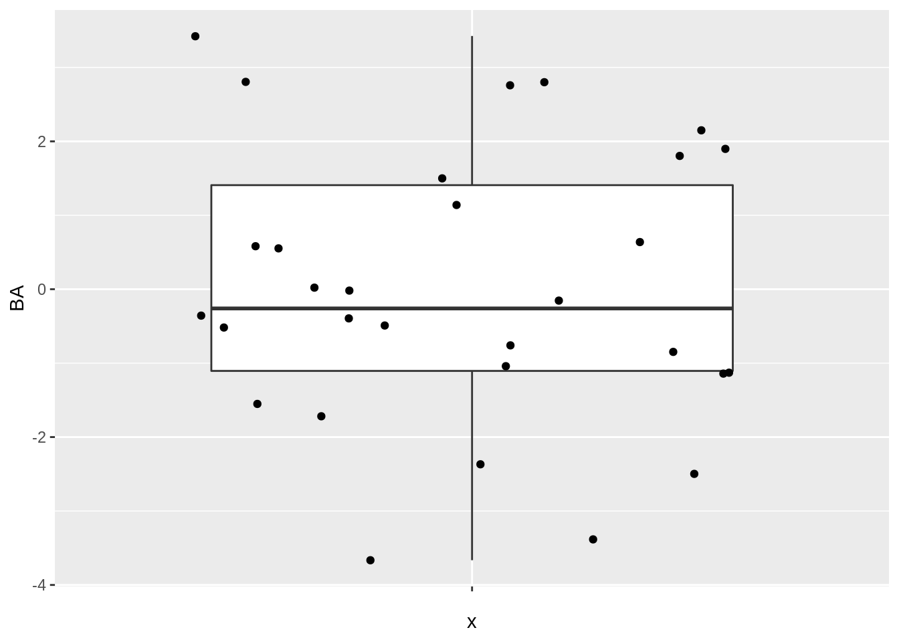
svdX <- toxData[,-1] %>%
svd
k <- 2
Vk <- svdX$v[,1:k]
Uk <- svdX$u[,1:k]
Dk <- diag(svdX$d[1:k])
Zk <- Uk%*%Dk
colnames(Zk) <- paste0("Z",1:k)
colnames(Vk) <- paste0("V",1:k)
Zk %>%
as.data.frame %>%
mutate(BA = toxData %>% pull(BA)) %>%
ggplot(aes(x= Z1, y = Z2, color = BA)) +
geom_point(size = 3) +
scale_colour_gradient2(low = "blue",mid="white",high="red") +
geom_point(size = 3, pch = 21, color = "black")- Scores on the first two principal components (or MDS plot).
- Each point corresponds to a compound.
- Color code refers to the toxicity score (higher score more toxic).
- Clear separation between compounds according to toxicity.
- Next logic step in a PCA is to interpret the principal components.
- We thus have to assess the loadings.
- We can add a vector for each gene to get a biplot, but this would require plotting 4000 vectors, which would render the plot unreadable.
Alternative graph to look at the many loadings of the first two PCs.
grid.arrange(
Vk %>%
as.data.frame %>%
mutate(geneID = 1:nrow(Vk)) %>%
ggplot(aes(x = geneID, y = V1)) +
geom_point(pch=21) +
geom_hline(yintercept = c(-2,0,2)*sd(Vk[,1]), col = "red") ,
Vk %>%
as.data.frame %>%
mutate(geneID = 1:nrow(Vk)) %>%
ggplot(aes(x = geneID, y = V2)) +
geom_point(pch=21) +
geom_hline(yintercept = c(-2,0,2)*sd(Vk[,2]), col = "red"),
ncol=2)It is almost impossible to interpret the PCs because there are 4000 genes contributing to each PC.
In an attempt to find the most important genes (in the sense that they drive the interpretation of the PCs), the plots show horizontal reference lines: the average of the loadings, and the average ± twice the standard deviation of the loadings. In between the lines we expects about 95% of the loadings (if they were normally distributed).
The points outside the band come from the genes that have rather large loadings (in absolute value) and hence are important for the interpretation of the PCs.
Note, that particularly for the first PC, only a few genes show a markedly large loadings that are negative. This means that an upregulation of these genes will lead to low scores on PC1.
These genes will very likely play an important role in the toxicity mechanism.
Indeed, low scores on PC1 are in the direction of more toxicity.
In the next chapter we will introduce a method to obtain sparse PCs.
1.2.4 Prediction model
## X1 X2 X3 X4 X5 X6
## -7.4569940 0.3571348 11.2492315 10.8354021 -13.7433891 5.6833874
## X7 X8 X9 X10 X11 X12
## 65.5387777 4.3404555 7.9103924 37.0296057 -54.8368698 -55.5547845
## X13 X14 X15 X16 X17 X18
## 5.7924667 23.1428002 -6.9610365 -28.5250571 -22.5509025 -97.9623731
## X19 X20 X21 X22 X23 X24
## -30.4171782 -32.6991673 -14.2808834 -16.1431266 -22.7498681 73.1635178
## X25 X26 X27 X28 X29 X30
## -5.7065827 37.4745379 -20.1999102 14.9906821 99.6080955 NA
## X31 X32 X33 X34 X35 X36
## NA NA NA NA NA NA
## X37 X38 X39 X40
## NA NA NA NA## [1] 3971## [1] 1Problem??
1.3 Brain example
- Courtesy to Solomon Kurz. Statistical rethinking with brms, ggplot2, and the tidyverse version 1.2.0.
https://bookdown.org/content/3890/ https://github.com/ASKurz/Statistical_Rethinking_with_brms_ggplot2_and_the_tidyverse
- Data with brain size and body size for seven species
brain <-
tibble(species = c("afarensis", "africanus", "habilis", "boisei", "rudolfensis", "ergaster", "sapiens"),
brain = c(438, 452, 612, 521, 752, 871, 1350),
mass = c(37.0, 35.5, 34.5, 41.5, 55.5, 61.0, 53.5))1.3.1 Data exploration
p <- brain %>%
ggplot(aes(x = mass, y = brain, label = species)) +
geom_point()
p + geom_text(nudge_y = 40)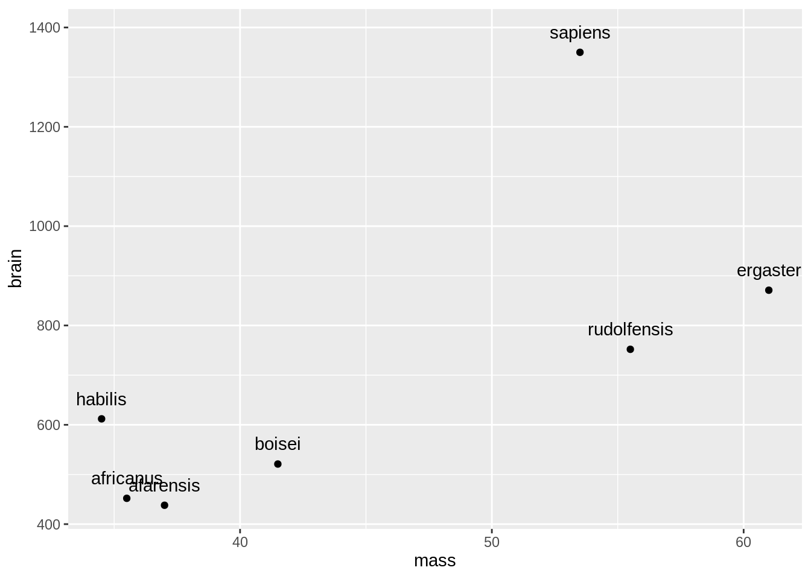
1.3.2 Models
Six models range in complexity from the simple univariate model
\[\begin{align*} \text{brain}_i & \sim \operatorname{Normal} (\mu_i, \sigma) \\ \mu_i & = \beta_0 + \beta_1 \text{mass}_i, \end{align*}\]
to the dizzying sixth-degree polynomial model
\[\begin{align*} \text{brain}_i & \sim \operatorname{Normal} (\mu_i, \sigma) \\ \mu_i & = \beta_0 + \beta_1 \text{mass}_i + \beta_2 \text{mass}_i^2 + \beta_3 \text{mass}_i^3 + \beta_4 \text{mass}_i^4 + \beta_5 \text{mass}_i^5 + \beta_6 \text{mass}_i^6. \end{align*}\]
formulas <- sapply(1:6, function(i)
return(
paste0("I(mass^",1:i,")") %>% paste(collapse=" + ")
)
)
formulas <- sapply(
paste0("brain ~ ", formulas),
as.formula)
models <- lapply(formulas, lm , data = brain)data.frame(
formula=formulas %>%
as.character,
r2 = sapply(
models,
function(mod) summary(mod)$r.squared)
) %>%
ggplot(
aes(x = r2,
y = formula,
label = r2 %>%
round(2) %>%
as.character)
) +
geom_text()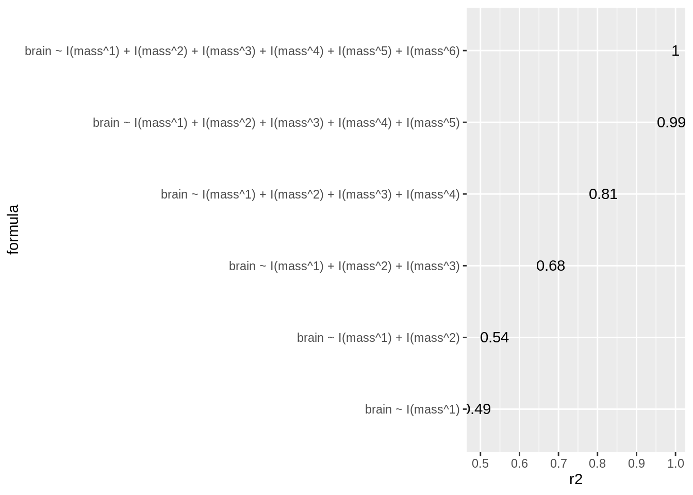
We plot the fit for each model individually and them arrange them together in one plot.
plots <- lapply(1:6, function(i)
{
p +
geom_smooth(method = "lm", formula = y ~ poly(x,i)) +
ggtitle(
paste0(
"r2 = ",
round(summary(models[[i]])$r.squared*100,1),
"%")
)
})
do.call("grid.arrange",c(plots, ncol = 3))## Warning in qt((1 - level)/2, df): NaNs produced## Warning in max(ids, na.rm = TRUE): no non-missing arguments to max; returning
## -Inf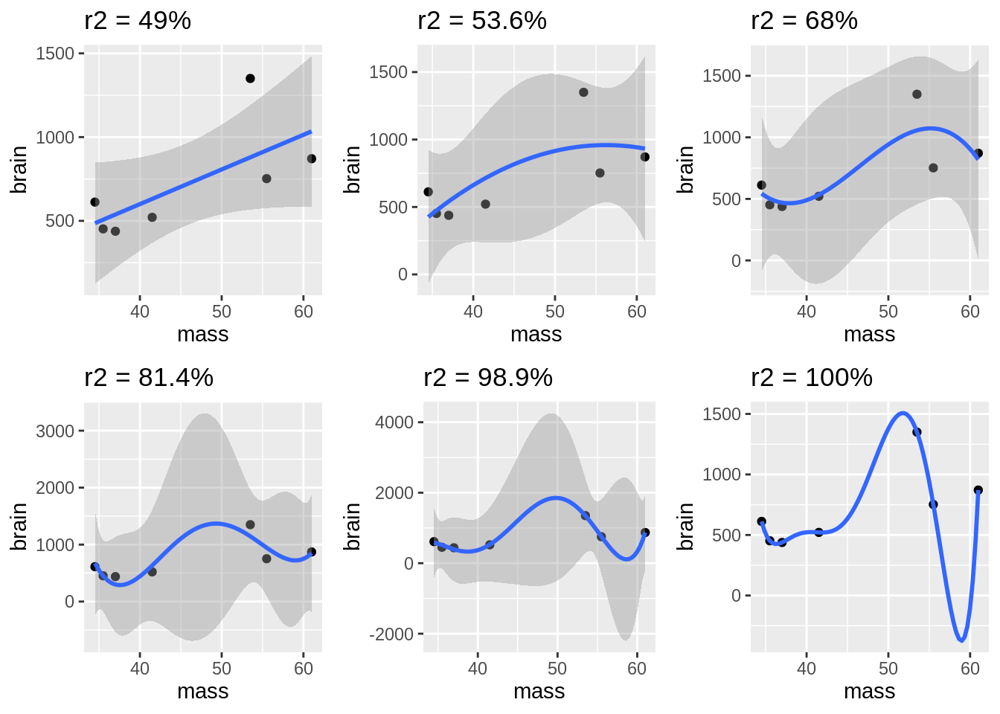
We clearly see that increasing the model complexity always produces a fit with a smaller SSE.
The problem of overfitting is very obvious. The more complex polynomial models will not generalise well for prediction!
We even have a model that fits the data perfectly, but that will make very absurd preditions!
Too few parameters hurts, too. Fit the underfit intercept-only model.
##
## Call:
## lm(formula = brain ~ 1, data = brain)
##
## Residuals:
## Min 1Q Median 3Q Max
## -275.71 -227.21 -101.71 97.79 636.29
##
## Coefficients:
## Estimate Std. Error t value Pr(>|t|)
## (Intercept) 713.7 121.8 5.86 0.00109 **
## ---
## Signif. codes: 0 '***' 0.001 '**' 0.01 '*' 0.05 '.' 0.1 ' ' 1
##
## Residual standard error: 322.2 on 6 degrees of freedomp +
stat_smooth(method = "lm", formula = y ~ 1) +
ggtitle(
paste0(
"r2 = ",
round(summary(m0)$r.squared*100,1),
"%")
)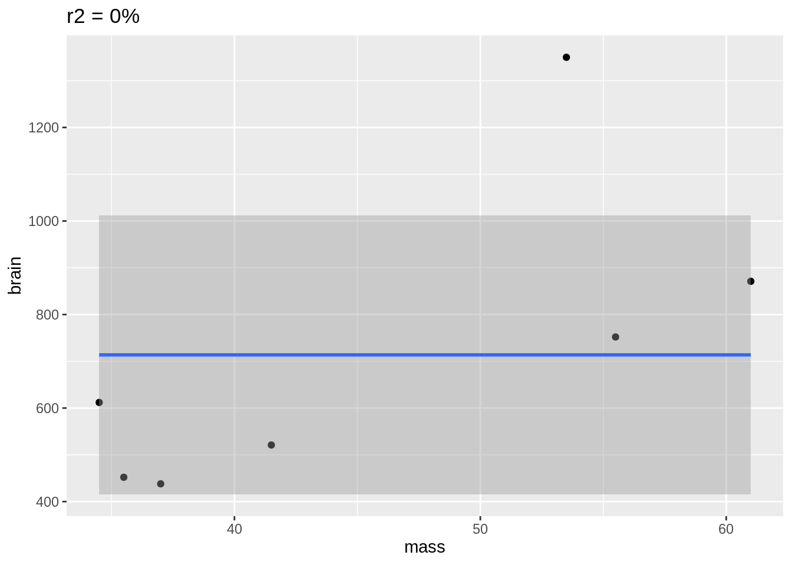
The underfit model did not learn anything about the relation between mass and brain. It would also do a very poor job for predicting new data.
1.4 Overview
We will make a distinction between continuous and discrete outcomes. In this course we focus on
Linear regression models for continous outcomes
- Penalised regression: Lasso and ridge
- Principal component regression (PCR)
Logistic regression models for binary outcomes
- Penalised regression: Lasso and ridge
For all types of model, we will discuss feature selection methods.
2 Linear Regression for High Dimensional Data
Consider linear regression model (for double centered data) \[ Y_i = \beta_1X_{i1} + \beta_2 X_{i2} + \cdots + \beta_pX_{ip} + \epsilon_i , \] with \(\text{E}\left[\epsilon \mid \mathbf{X}\right]=0\) and \(\text{var}\left[\epsilon \mid \mathbf{X}\right]=\sigma^2\).
In matrix notation the model becomes \[ \mathbf{Y} = \mathbf{X}\mathbf\beta + \mathbf\epsilon. \] The least squares estimator of \(\mathbf\beta\) is given by \[ \hat{\mathbf\beta} = (\mathbf{X}^T\mathbf{X})^{-1}\mathbf{X}^T\mathbf{Y} , \] and the variance of \(\hat{\mathbf\beta}\) equals \[ \text{var}\left[\hat{\mathbf\beta}\right] = (\mathbf{X}^T\mathbf{X})^{-1}\sigma^2. \] \(\longrightarrow\) the \(p \times p\) matrix \((\mathbf{X}^T\mathbf{X})^{-1}\) is crucial
Note, that
with double centered data it is meant that both the responses are centered (mean of \(\mathbf{Y}\) is zero) and that all predictors are centered (columns of \(\mathbf{X}\) have zero mean). With double centered data the intercept in a linear regression model is always exactly equal to zero and hence the intercept must not be included in the model.
we do not assume that the residuals are normally distributed. For prediction purposes this is often not required (normality is particularly important for statistical inference in small samples).
2.1 Linear Regression for multivariate data vs High Dimensional Data
\(\mathbf{X^TX}\) and \((\mathbf{X^TX})^{-1}\) are \(p \times p\) matrices
\(\mathbf{X^TX}\) can only be inverted if it has rank \(p\)
Rank of a matrix of form \(\mathbf{X^TX}\), with \(\mathbf{X}\) and \(n\times p\) matrix, can never be larger than \(\min(n,p)\).
in most regression problems \(n>p\) and rank of \((\mathbf{X^TX})\) equals \(p\)
in high dimensional regression problems \(p >>> n\) and rank of \((\mathbf{X^TX})\) equals \(n<p\)
in the toxicogenomics example \(n=30<p=4000\) and \(\text{rank}(\mathbf{X^TX})\leq n=30\). \(\longrightarrow\) \((\mathbf{X^TX})^{-1}\) does not exist, and neither does \(\hat{\boldsymbol{\beta}}\).
2.2 Can SVD help?
Since the columns of \(\mathbf{X}\) are centered, \(\mathbf{X^TX} \propto \text{var}\left[\mathbf{X}\right]\).
if \(\text{rank}(\mathbf{X^TX})=n=30\), the PCA will give 30 components, each being a linear combination of \(p=4000\) variables. These 30 PCs contain all information present in the original \(\mathbf{X}\) data.
if \(\text{rank}(\mathbf{X})=n=30\), the SVD of \(\mathbf{X}\) is given by \[ \mathbf{X} = \sum_{i=1}^n \delta_i \mathbf{u}_i \mathbf{v}_i^T = \mathbf{U} \boldsymbol{\Delta} \mathbf{V}^T = \mathbf{ZV}^T, \] with \(\mathbf{Z}\) the \(n\times n\) matrix with the scores on the \(n\) PCs.
Still problematic because if we use all PCs \(n=p\).
3 Principal Component Regression
A principal component regression (PCR) consists of
transforming \(p=4000\) dimensional \(X\)-variable to the \(n=30\) dimensional \(Z\)-variable (PC scores). The \(n\) PCs are mutually uncorrelated.
using the \(n\) PC-variables as regressors in a linear regression model
performing feature selection to select the most important regressors (PC).
Feature selection is key, because we don’t want to have as many regressors as there are observations in the data. This would result in zero residual degrees of freedom. (see later)
To keep the exposition general so that we allow for a feature selection to have taken place, I use the notation \(\mathbf{U}_S\) to denote a matrix with left-singular column vectors \(\mathbf{u}_i\), with \(i \in {\cal{S}}\) (\({\cal{S}}\) an index set referring to the PCs to be included in the regression model).
For example, suppose that a feature selection method has resulted in the selection of PCs 1, 3 and 12 for inclusion in the prediction model, then \({\cal{S}}=\{1,3,12\}\) and \[ \mathbf{U}_S = \begin{pmatrix} \mathbf{u}_1 & \mathbf{u}_3 & \mathbf{u}_{12} \end{pmatrix}. \]
3.0.1 Example model based on first 4 PCs
k <- 30
Uk <- svdX$u[,1:k]
Dk <- diag(svdX$d[1:k])
Zk <- Uk%*%Dk
Y <- toxData %>%
pull(BA)
m4 <- lm(Y~Zk[,1:4])
summary(m4)##
## Call:
## lm(formula = Y ~ Zk[, 1:4])
##
## Residuals:
## Min 1Q Median 3Q Max
## -2.1438 -0.7033 -0.1222 0.7255 2.2997
##
## Coefficients:
## Estimate Std. Error t value Pr(>|t|)
## (Intercept) -1.877e-16 2.081e-01 0.000 1.0000
## Zk[, 1:4]1 -5.275e-01 7.725e-02 -6.828 3.72e-07 ***
## Zk[, 1:4]2 -1.231e-02 8.262e-02 -0.149 0.8828
## Zk[, 1:4]3 -1.759e-01 8.384e-02 -2.098 0.0461 *
## Zk[, 1:4]4 -3.491e-02 8.396e-02 -0.416 0.6811
## ---
## Signif. codes: 0 '***' 0.001 '**' 0.01 '*' 0.05 '.' 0.1 ' ' 1
##
## Residual standard error: 1.14 on 25 degrees of freedom
## Multiple R-squared: 0.672, Adjusted R-squared: 0.6195
## F-statistic: 12.8 on 4 and 25 DF, p-value: 8.352e-06Note:
- the intercept is estimated as zero. (Why?) The model could have been fitted as
m4 <- lm(Y~-1+Zk[,1:4])the PC-predictors are uncorrelated (by construction)
first PC-predictors are not necessarily the most important predictors
\(p\)-values are not very meaningful when prediction is the objective
Methods for feature selection will be discussed later.
4 Ridge Regression
4.1 Penalty
The ridge parameter estimator is defined as the parameter \(\mathbf\beta\) that minimises the penalised least squares criterion
\[ \text{SSE}_\text{pen}=\Vert\mathbf{Y} - \mathbf{X\beta}\Vert_2^2 + \lambda \Vert \boldsymbol{\beta} \Vert_2^2 \]
\(\Vert \boldsymbol{\beta} \Vert_2^2=\sum_{j=1}^p \beta_j^2\) is the \(L_2\) penalty term
\(\lambda>0\) is the penalty parameter (to be chosen by the user).
Note, that that is equivalent to minimizing \[ \Vert\mathbf{Y} - \mathbf{X\beta}\Vert_2^2 \text{ subject to } \Vert \boldsymbol{\beta}\Vert^2_2\leq s \]
Note, that \(s\) has a one-to-one correspondence with \(\lambda\)
4.2 Graphical interpretation
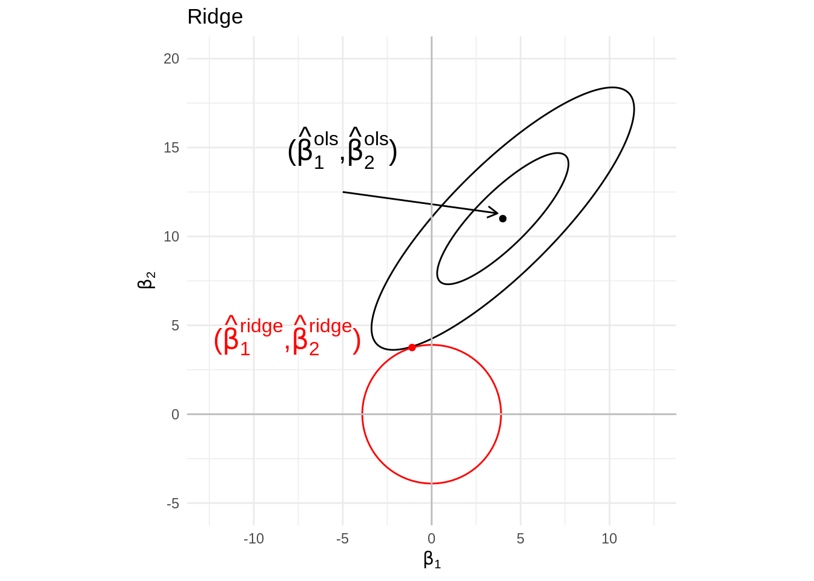
4.3 Solution
The solution is given by \[ \hat{\boldsymbol{\beta}} = (\mathbf{X^TX}+\lambda \mathbf{I})^{-1} \mathbf{X^T Y}. \] It can be shown that \((\mathbf{X^TX}+\lambda \mathbf{I})\) is always of rank \(p\) if \(\lambda>0\).
Hence, \((\mathbf{X^TX}+\lambda \mathbf{I})\) is invertible and \(\hat{\boldsymbol{\beta}}\) exists even if \(p>>>n\).
We also find \[ \text{var}\left[\hat{\mathbf\beta}\right] = (\mathbf{X^TX}+\lambda \mathbf{I})^{-1} \mathbf{X}^T\mathbf{X} (\mathbf{X^TX}+\lambda \mathbf{I})^{-1}\sigma^2 \]
However, it can be shown that improved intervals that also account for the bias can be constructed by using:
\[ \text{var}\left[\hat{\mathbf\beta}\right] = (\mathbf{X^TX}+\lambda \mathbf{I})^{-1} \sigma^2. \]
4.3.1 Proof
The criterion to be minimised is \[ \text{SSE}_\text{pen}=\Vert\mathbf{Y} - \mathbf{X\beta}\Vert_2^2 + \lambda \Vert \boldsymbol{\beta} \Vert_2^2. \] First we re-express SSE in matrix notation: \[ \text{SSE}_\text{pen} = (\mathbf{Y}-\mathbf{X\beta})^T(\mathbf{Y}-\mathbf{X\beta}) + \lambda \boldsymbol{\beta}^T\boldsymbol{\beta}. \] The partial derivative w.r.t. \(\boldsymbol{\beta}\) is \[ \frac{\partial}{\partial \boldsymbol{\beta}}\text{SSE}_\text{pen} = -2\mathbf{X}^T(\mathbf{Y}-\mathbf{X\beta})+2\lambda\boldsymbol{\beta}. \] Solving \(\frac{\partial}{\partial \boldsymbol{\beta}}\text{SSE}_\text{pen}=0\) gives \[ \hat{\boldsymbol{\beta}} = (\mathbf{X^TX}+\lambda \mathbf{I})^{-1} \mathbf{X^T Y}. \] (assumption: \((\mathbf{X^TX}+\lambda \mathbf{I})\) is of rank \(p\). This is always true if \(\lambda>0\))
4.4 Link with SVD
4.4.1 SVD and inverse
Write the SVD of \(\mathbf{X}\) (\(p>n\)) as \[ \mathbf{X} = \sum_{i=1}^n \delta_i \mathbf{u}_i \mathbf{v}_i^T = \sum_{i=1}^p \delta_i \mathbf{u}_i \mathbf{v}_i^T = \mathbf{U}\boldsymbol{\Delta} \mathbf{V}^T , \] with
\(\delta_{n+1}=\delta_{n+2}= \cdots = \delta_p=0\)
\(\boldsymbol{\Delta}\) a \(p\times p\) diagonal matrix of the \(\delta_1,\ldots, \delta_p\)
\(\mathbf{U}\) an \(n\times p\) matrix and \(\mathbf{V}\) a \(p \times p\) matrix. Note that only the first \(n\) columns of \(\mathbf{U}\) and \(\mathbf{V}\) are informative.
With the SVD of \(\mathbf{X}\) we write \[ \mathbf{X}^T\mathbf{X} = \mathbf{V}\boldsymbol{\Delta }^2\mathbf{V}^T. \] The inverse of \(\mathbf{X}^T\mathbf{X}\) is then given by \[ (\mathbf{X}^T\mathbf{X})^{-1} = \mathbf{V}\boldsymbol{\Delta}^{-2}\mathbf{V}^T. \] Since \(\boldsymbol{\Delta}\) has \(\delta_{n+1}=\delta_{n+2}= \cdots = \delta_p=0\), it is not invertible.
4.4.2 SVD of penalised matrix \(\mathbf{X^TX}+\lambda \mathbf{I}\)
It can be shown that \[ \mathbf{X^TX}+\lambda \mathbf{I} = \mathbf{V} (\boldsymbol{\Delta}^2+\lambda \mathbf{I}) \mathbf{V}^T , \] i.e. adding a constant to the diagonal elements does not affect the eigenvectors, and all eigenvalues are increased by this constant. \(\longrightarrow\) zero eigenvalues become \(\lambda\).
Hence, \[ (\mathbf{X^TX}+\lambda \mathbf{I})^{-1} = \mathbf{V} (\boldsymbol{\Delta}^2+\lambda \mathbf{I})^{-1} \mathbf{V}^T , \] which can be computed even when some eigenvalues in \(\boldsymbol{\Delta}^2\) are zero.
Note, that for high dimensional data (\(p>>>n\)) many eigenvalues are zero because \(\mathbf{X^TX}\) is a \(p \times p\) matrix and has rank \(n\).
The identity \(\mathbf{X^TX}+\lambda \mathbf{I} = \mathbf{V} (\boldsymbol{\Delta}^2+\lambda \mathbf{I}) \mathbf{V}^T\) is easily checked: \[ \mathbf{V} (\boldsymbol{\Delta}^2+\lambda \mathbf{I}) \mathbf{V}^T = \mathbf{V}\boldsymbol{\Delta}^2\mathbf{V}^T + \lambda \mathbf{VV}^T = \mathbf{V}\boldsymbol{\Delta}^2\mathbf{V}^T + \lambda \mathbf{I} = \mathbf{X^TX}+\lambda \mathbf{I}. \]
4.5 Properties
The Ridge estimator is biased! The \(\boldsymbol{\beta}\) are shrunken to zero! \[\begin{eqnarray} \text{E}[\hat{\boldsymbol{\beta}}] &=& (\mathbf{X^TX}+\lambda \mathbf{I})^{-1} \mathbf{X}^T \text{E}[\mathbf{Y}]\\ &=& (\mathbf{X}^T\mathbf{X}+\lambda \mathbf{I})^{-1} \mathbf{X}^T \mathbf{X}\boldsymbol{\beta}\\ \end{eqnarray}\]
Note, that the shrinkage is larger in the direction of the smaller eigenvalues.
\[\begin{eqnarray} \text{E}[\hat{\boldsymbol{\beta}}]&=&\mathbf{V} (\boldsymbol{\Delta}^2+\lambda \mathbf{I})^{-1} \mathbf{V}^T \mathbf{V} \boldsymbol{\Delta}^2 \mathbf{V}^T\boldsymbol{\beta}\\ &=&\mathbf{V} (\boldsymbol{\Delta}^2+\lambda \mathbf{I})^{-1} \boldsymbol{\Delta}^2 \mathbf{V}^T\boldsymbol{\beta}\\ &=& \mathbf{V} \left[\begin{array}{ccc} \frac{\delta_1^2}{\delta_1^2+\lambda}&\ldots&0 \\ &\vdots&\\ 0&\ldots&\frac{\delta_r^2}{\delta_r^2+\lambda} \end{array}\right] \mathbf{V}^T\boldsymbol{\beta} \end{eqnarray}\]
the variance of the prediction \(\hat{{Y}}(\mathbf{x})=\mathbf{x}^T\hat\beta\), \[ \text{var}\left[\hat{{Y}}(\mathbf{x})\mid \mathbf{x}\right] = \mathbf{x}^T(\mathbf{X^TX}+\lambda \mathbf{I})^{-1}\mathbf{x} \] is smaller than with the least-squares estimator.
through the bias-variance trade-off it is hoped that better predictions in terms of expected conditional test error can be obtained, for an appropriate choice of \(\lambda\).
Recall the expression of the expected conditional test error \[\begin{eqnarray} Err(\mathbf{x}) &=& \text{E}\left[(\hat{Y} - Y^*)^2\mid \mathbf{x}\right]\\ &=& \text{var}\left[\hat{Y}\mid \mathbf{x}\right] + \text{bias}^2(\mathbf{x})+ \text{var}\left[Y^*\mid \mathbf{x}\right] \end{eqnarray}\] where
- \(\hat{Y}=\hat{Y}(\mathbf{x})=\mathbf{x}^T\hat{\boldsymbol{\beta}}\) is the prediction at \(\mathbf{x}\)
- \(Y^*\) is an outcome at predictor \(\mathbf{x}\)
- \(\mu(\mathbf{x}) = \text{E}\left[\hat{Y}\mid \mathbf{x}\right] \text{ and } \mu^*(x)=\text{E}\left[Y^*\mid \mathbf{x}\right]\)
- \(\text{bias}(\mathbf{x})=\mu(\mathbf{x})-\mu^*(\mathbf{x})\)
- \(\text{var}\left[Y^*\mid \mathbf{x}\right]\) the irreducible error that does not depend on the model. It simply originates from observations that randomly fluctuate around the true mean \(\mu^*(x)\).
4.6 Toxicogenomics example
## Loading required package: Matrix##
## Attaching package: 'Matrix'## The following objects are masked from 'package:tidyr':
##
## expand, pack, unpack## Loaded glmnet 4.1-2mRidge <- glmnet(
x = toxData[,-1] %>%
as.matrix,
y = toxData %>%
pull(BA),
alpha = 0) # ridge: alpha = 0
plot(mRidge, xvar="lambda")The R function uses to refer to the penalty parameter. In this course we use \(\lambda\), because \(\lambda\) is often used as eigenvalues.
The graph shows that with increasing penalty parameter, the parameter estimates are shrunken towards zero. The estimates will only reach zero for \(\lambda \rightarrow \infty\). The stronger the shrinkage, the larger the bias (towards zero) and the smaller the variance of the parameter estimators (and hence also smaller variance of the predictions).
Another (informal) viewpoint is the following. By shrinking the estimates towards zero, the estimates loose some of their ``degrees of freedom’’ so that the parameters become estimable with only \(n<p\) data points. Even with a very small \(\lambda>0\), the parameters regain their estimability. However, note that the variance of the estimator is given by \[ \text{var}\left[\hat{\mathbf\beta}\right] = (\mathbf{X^TX}+\lambda \mathbf{I})^{-1} \sigma^2 = \mathbf{V}(\boldsymbol{\Delta}^2+\lambda\mathbf{I})^{-1}\mathbf{V}^T\sigma^2. \] Hence, a small \(\lambda\) will result in large variances of the parameter estimators. The larger \(\lambda\), the smaller the variances become. In the limit, as \(\lambda\rightarrow\infty\), the estimates are converged to zero and show no variability any longer.
5 Lasso Regression
The Lasso is another example of penalised regression.
The lasso estimator of \(\boldsymbol{\beta}\) is the solution to minimising the penalised SSE \[ \text{SSE}_\text{pen} = \sum_{i=1}^n (Y_i - \mathbf{x}_i^T\boldsymbol{\beta})^2 + \lambda \sum_{j=1}^p \vert \beta_j\vert. \]
or, equivalently, minimising
\[ \text{SSE} = \Vert \mathbf{Y} - \mathbf{X\beta}\Vert_2^2 \text{ subject to } \Vert \mathbf\beta\Vert_1 \leq c \] with
\(\Vert \mathbf\beta\Vert_1 = \sum\limits_{j=1}^p \vert \beta_j \vert\)
Despite strong similarity between ridge and lasso regression (\(L_2\) versus \(L_1\) norm in penalty term), there is no analytical solution of the lasso parameter estimate of \(\mathbf\beta\).
Fortunately, computational efficient algorithms have been implemented in statistical software
The Lasso estimator of \(\boldsymbol{\beta}\) is biased and generally has a smaller variance then the least-squares estimator.
Hence, the bias-variance trade-off may here also help in finding better predictions with biased estimators.
In contrast to ridge regression, however, the lasso estimator can give at most \(\min(p,n)\) non-zero \(\beta\)-estimates.
Hence, at first sight the lasso is not directly appropriate for high-dimensional settings.
An important advantage of the lasso is that choosing an appropriate value for \(\lambda\) is a kind a model building or feature selection procedure (see further).
5.1 Graphical interpretation of Lasso vs ridge
Note that the lasso is a constrained regression problem with
\[ \Vert \mathbf{Y} - \mathbf{X\beta}\Vert_2^2 \text{ subject to } \Vert \mathbf\beta\Vert_1 \leq c \] and ridge \[ \Vert \mathbf{Y} - \mathbf{X\beta}\Vert_2^2 \text{ subject to } \Vert \mathbf\beta\Vert^2_2 \leq c \]
Note, that
- parameters for the lasso can never switch sign, they are set at zero! Selection!
- ridge regression can lead to parameters that switch sign.
5.2 Toxicogenomics example
mLasso <- glmnet(
x = toxData[,-1] %>%
as.matrix,
y = toxData %>%
pull(BA),
alpha = 1)
plot(mLasso, xvar = "lambda")The graph with the paths of the parameter estimates nicely illustrates the typical behaviour of the lasso estimates as a function of \(\lambda\): when \(\lambda\) increases the estimates are shrunken towards zero.
When an estimate hits zero, it remains exactly equal to zero when \(\gamma\) further increases. A parameter estimate equal to zero, say \(\hat\beta_j=0\), implies that the corresponding predictor \(x_j\) is no longer included in the model (i.e. \(\beta_jx_j=0\)).
The model fit is known as a sparse model fit (many zeroes). Hence, choosing a appropriate value for \(\gamma\) is like choosing the important predictors in the model (feature selection).
6 Splines and the connection to ridge regression.
6.1 Lidar dataset
LIDAR (light detection and ranging) uses the reflection of laser-emitted light to detect chemical compounds in the atmosphere.
The LIDAR technique has proven to be an efficient tool for monitoring the distribution of several atmospheric pollutants of importance; see Sigrist (1994).
The range is the distance traveled before the light is reflected back to its source.
The logratio is the logarithm of the ratio of received light from two laser sources.
One source had a frequency equal to the resonance frequency of the compound of interest, which was mercury in this study.
The other source had a frequency off this resonance frequency.
The concentration of mercury can be derived from a regression model of the logratio in function of the range for each range x.
library("SemiPar")
data(lidar)
pLidar <- lidar %>%
ggplot(aes(x = range, y = logratio)) +
geom_point() +
xlab("range (m)")
pLidar +
geom_smooth()## `geom_smooth()` using method = 'loess' and formula 'y ~ x'
- The data is non-linear
- Linear regression will not work!
- The data shows a smooth relation between the logratio and the range
6.2 Basis expansion
\[y_i=f(x_i)+\epsilon_i,\] with \[f(x)=\sum\limits_{k=1}^K \theta_k b_k(x)\]
Select set of basis functions \(b_k(x)\)
Select number of basis functions \(K\)
Examples
- Polynomial model: \(x^k\)
- Orthogonal series: Fourier, Legendre polynomials, Wavelets
- Polynomial splines: \(1, x, (x-t_m)_+\) with \(m=1, \ldots, K-2\) knots \(t_m\)
- …
6.2.1 Trunctated line basis
\[y_i=f(x_i)+\epsilon_i,\]
- One of the most simple basis expansions
- \(f(x_i)=\beta_0+\beta_1x_i+\sum\limits_{m=1}^{K-2}\theta_m(x_i-t_m)_+\) with \((.)_+\) the operator that takes the positive part.
- Note, that better basis expansions exist, which are orthogonal, computational more stable and/or continuous derivative beyond first order
- We will use this basis for didactical purposes
- We can use OLS to fit y w.r.t. the basis.
knots <- seq(400,700,12.5)
basis <- sapply(knots,
function(k,y) (y-k)*(y>k),
y= lidar %>% pull(range)
)
basisExp <- cbind(1, range = lidar %>% pull(range), basis)
splineFitLs <- lm(logratio ~ -1 + basisExp, lidar)
pBasis <- basisExp[,-1] %>%
data.frame %>%
gather("basis","values",-1) %>%
ggplot(aes(x = range, y = values, color = basis)) +
geom_line() +
theme(legend.position="none") +
ylab("basis")
grid.arrange(
pLidar +
geom_line(aes(x = lidar$range, y = splineFitLs$fitted), lwd = 2),
pBasis,
ncol=1)## Warning: Use of `lidar$range` is discouraged. Use `range` instead.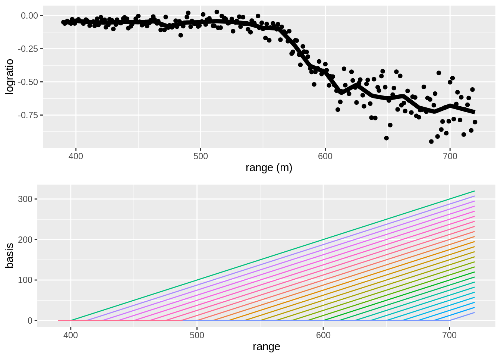
- Note, that the model is overfitting!
- The fit is very wiggly and is tuned too much to the data.
- The fit has a large variance and low bias.
- It will therefore not generalise well to predict the logratio of future observations.
6.2.1.1 Solution for overfitting?
We could perform model selection on the basis to select the important basis functions to model the signal. But, this will have the undesired property that the fit will no longer be smooth.
We can also adopt a ridge penalty!
However, we do not want to penalise the intercept and the linear term.
Ridge criterion
\[\Vert\mathbf{Y}-\mathbf{X\beta}\Vert^2+\lambda\boldsymbol{\beta}^T\mathbf{D}\boldsymbol{\beta} \]
With \(\mathbf{D}\) with dimensions (K,K): \(\mathbf{D}=\left[\begin{array}{cc}\mathbf{0}_{2\times2}& \mathbf{0}_{2\times K-2}\\ \mathbf{0}_{K-2\times2}&\mathbf{I}_{K-2\times K-2}\end{array}\right]\)
- Here we will set the penalty at 900.
D <- diag(ncol(basisExp))
D[1:2,1:2] <- 0
lambda <- 900
betaRidge <- solve(t(basisExp)%*%basisExp+(lambda*D))%*%t(basisExp)%*%lidar$logratio
grid.arrange(
pLidar +
geom_line(aes(x = lidar$range, y = c(basisExp %*% betaRidge)), lwd = 2),
pBasis,
ncol=1)## Warning: Use of `lidar$range` is discouraged. Use `range` instead.How do we choose \(\lambda\)?
7 Evaluation of Prediction Models
Predictions are calculated with the fitted model \[ \hat{Y}(\mathbf{x}) = \hat{m}(\mathbf{x})=\mathbf{x}^T\hat{\beta} \] when focussing on prediction, we want the prediction error to be as small as possible.
The prediction error for a prediction at covariate pattern \(\mathbf{x}\) is given by \[ \hat{Y}(\mathbf{x}) - Y^*, \] where
\(\hat{Y}(\mathbf{x})=\mathbf{x}^T\hat{\boldsymbol{\beta}}\) is the prediction at \(\mathbf{x}\)
\(Y^*\) is an outcome at covariate pattern \(\mathbf{x}\)
Prediction is typically used to predict an outcome before it is observed.
- Hence, the outcome \(Y^*\) is not observed yet, and
- the prediction error cannot be computed.
Recall that the prediction model \(\hat{Y}(\mathbf{x})\) is estimated by using data in the training data set \((\mathbf{X},\mathbf{Y})\), and
that the outcome \(Y^*\) is an outcome at \(\mathbf{x}\) which is assumed to be independent of the training data.
Goal is to use prediction model for predicting a future observation (\(Y^*\)), i.e. an observation that still has to be realised/observed (otherwise prediction seems rather useless).
Hence, \(Y^*\) can never be part of the training data set.
Here we provide definitions and we show how the prediction performance of a prediction model can be evaluated from data.
Let \({\cal{T}}=(\mathbf{Y},\mathbf{X})\) denote the training data, from which the prediction model \(\hat{Y}(\cdot)\) is build. This building process typically involves feature selection and parameter estimation.
We will use a more general notation for the prediction model: \(\hat{m}(\mathbf{x})=\hat{Y}(\mathbf{x})\).
7.1 Test or Generalisation Error
The test or generalisation error for prediction model \(\hat{m}(\cdot)\) is given by \[ \text{Err}_{\cal{T}} = \text{E}_{Y^*,X^*}\left[(\hat{m}(\mathbf{X}^*) - Y^*)^2\mid {\cal{T}}\right] \] where \((Y^*,X^*)\) is independent of the training data.
- Note that the test error is conditional on the training data \({\cal{T}}\).
- Hence, the test error evaluates the performance of the single model build from the observed training data.
- This is the ultimate target of the model assessment, because it is exactly this prediction model that will be used in practice and applied to future predictors \(\mathbf{X}^*\) to predict \(Y^*\).
- The test error is defined as an average over all such future observations \((Y^*,\mathbf{X}^*)\).
7.2 Conditional test error
Sometimes the conditional test error is used:
The conditional test error in \(\mathbf{x}\) for prediction model \(\hat{m}(\mathbf{x})\) is given by \[ \text{Err}_{\cal{T}}(\mathbf{x}) = \text{E}_{Y^*}\left[(\hat{m}(\mathbf{x}) - Y^*)^2\mid {\cal{T}}, \mathbf{x}\right] \] where \(Y^*\) is an outcome at predictor \(\mathbf{x}\), independent of the training data.
Hence, \[ \text{Err}_{\cal{T}} = \text{E}_{X^*}\left[\text{Err}_{\cal{T}}(\mathbf{X}^*)\right]. \]
A closely related error is the insample error.
7.3 Insample Error
The insample error for prediction model \(\hat{m}(\mathbf{x})\) is given by \[ \text{Err}_{\text{in} \cal{T}} = \frac{1}{n}\sum_{i=1}^n \text{Err}_{\cal{T}}(\mathbf{x}_i), \]
i.e. the insample error is the sample average of the conditional test errors evaluated in the \(n\) training dataset predictors \(\mathbf{x}_i\).
Since \(\text{Err}_{\cal{T}}\) is an average over all \(\mathbf{X}\), even over those predictors not observed in the training dataset, it is sometimes referred to as the outsample error.
7.4 Estimation of the insample error
We start with introducing the training error rate, which is closely related to the MSE in linear models.
7.4.1 Training error
The training error is given by \[ \overline{\text{err}} = \frac{1}{n}\sum_{i=1}^n (Y_i - \hat{m}(\mathbf{x}_i))^2 , \] where the \((Y_i,\mathbf{x}_i)\) from the training dataset which is also used for the calculation of \(\hat{m}\).
The training error is an overly optimistic estimate of the test error \(\text{Err}_{\cal{T}}\).
The training error will never increases when the model becomes more complex. \(\longrightarrow\) cannot be used directly as a model selection criterion.
Indeed, model parameters are often estimated by minimising the training error (cfr. SSE).
- Hence the fitted model adapts to the training data, and
- training error will be an overly optimistic estimate of the test error \(\text{Err}_{\cal{T}}\).
It can be shown that the training error is related to the insample test error via
\[ \text{E}_\mathbf{Y} \left[\text{Err}_{\text{in}{\cal{T}}}\right] = \text{E}_\mathbf{Y}\left[\overline{\text{err}}\right] + \frac{2}{n}\sum_{i=1}^n \text{cov}_\mathbf{Y}\left[\hat{m}(\mathbf{x}_i),Y_i\right], \]
Note, that for linear models \[ \hat{m}(\mathbf{x}_i) = \mathbf{X}\hat{\boldsymbol{\beta}}= \mathbf{X}(\mathbf{X}^T\mathbf{X})^{-1}\mathbf{X}^T\mathbf{Y} = \mathbf{HY} \] with
- \(\mathbf{H}\) the hat matrix and
- all \(Y_i\) are assumed to be independently distributed \(N(\mathbf{X}\boldsymbol{\beta},\sigma^2)\)
Hence, for linear models with independent observations
\[\begin{eqnarray} \text{cov}_\mathbf{Y}\left[\hat{m}(\mathbf{x}_i),Y_i)\right] &=& \text{cov}_\mathbf{Y}\left[\mathbf{H}_{i}^T\mathbf{Y},Y_i)\right]\\ &=& \text{cov}_\mathbf{Y}\left[h_{ii} Y_i,Y_i\right]\\ &=& h_{ii} \text{cov}_\mathbf{Y}\left[Y_i,Y_i\right]\\ &=& h_{ii} \sigma^2\\ \end{eqnarray}\]
And we can thus estimate the insample error by Mallow’s \(C_p\)
\[\begin{eqnarray} C_p &=& \overline{\text{err}} + \frac{2\sigma^2}{n}\text{tr}(\mathbf{H})\\ &=& \overline{\text{err}} + \frac{2\sigma^2p}{n} \end{eqnarray}\]
with \(p\) the number of predictors.
- Mallow’s \(C_p\) is often used for model selection.
- Note, that we can also consider it as a kind of penalized least squares:
\[ n \times C_p = \Vert \mathbf{Y} - \mathbf{X}\boldsymbol{\beta}\Vert_2^2 + 2\sigma^2 \Vert \boldsymbol{\beta} \Vert_0 \] with \(L_0\) norm \(\Vert \boldsymbol{\beta} \Vert_0 = \sum_{j=1}^p \beta_p^0 = p\).
7.5 Expected test error
The test or generalisation error was defined conditionally on the training data. By averaging over the distribution of training datasets, the expected test error arises.
\[\begin{eqnarray*} \text{E}_{\cal{T}}\left[\text{Err}_{{\cal{T}}}\right] &=& \text{E}_{\cal{T}}\left[\text{E}_{Y^*,X^*}\left[(\hat{m}(\mathbf{X}^*) - Y^*)^2\mid {\cal{T}}\right]\right] \\ &=& \text{E}_{Y^*,X^*,{\cal{T}}}\left[(\hat{m}(\mathbf{X}^*) - Y^*)^2\right]. \end{eqnarray*}\]
The expected test error may not be of direct interest when the goal is to assess the prediction performance of a single prediction model \(\hat{m}(\cdot)\).
The expected test error averages the test errors of all models that can be build from all training datasets, and hence this may be less relevant when the interest is in evaluating one particular model that resulted from a single observed training dataset.
Also note that building a prediction model involves both parameter estimation and feature selection.
Hence the expected test error also evaluates the feature selection procedure (on average).
If the expected test error is small, it is an indication that the model building process gives good predictions for future observations \((Y^*,\mathbf{X}^*)\) on average.
7.5.1 Estimating the Expected test error
The expected test error may be estimated by cross validation (CV).
7.5.1.1 Leave one out cross validation (LOOCV)}
The LOOCV estimator of the expected test error (or expected outsample error) is given by \[ \text{CV} = \frac{1}{n} \sum_{i=1}^n \left(Y_i - \hat{m}^{-i}(\mathbf{x}_i)\right)^2 , \] where
- the \((Y_i,\mathbf{x}_i)\) form the training dataset
- \(\hat{m}^{-i}\) is the fitted model based on all training data, except observation \(i\)
- \(\hat{m}^{-i}(\mathbf{x}_i)\) is the prediction at \(\mathbf{x}_i\), which is the observation left out the training data before building model \(m\).
Some rationale as to why LOOCV offers a good estimator of the outsample error:
the prediction error \(Y^*-\hat{m}(\mathbf{x})\) is mimicked by not using one of the training outcomes \(Y_i\) for the estimation of the model so that this \(Y_i\) plays the role of \(Y^*\), and, consequently, the fitted model \(\hat{m}^{-i}\) is independent of \(Y_i\)
the sum in \(CV\) is over all \(\mathbf{x}_i\) in the training dataset, but each term \(\mathbf{x}_i\) was left out once for the calculation of \(\hat{m}^{-i}\). Hence, \(\hat{m}^{-i}(\mathbf{x}_i)\) mimics an outsample prediction.
the sum in CV is over \(n\) different training datasets (each one with a different observation removed), and hence CV is an estimator of the expected test error.
For linear models the LOOCV can be readily obtained from the fitted model: i.e.
\[\text{CV} = \frac{1}{n}\sum\limits_{i=1}^n \frac{e_i^2}{(1-h_{ii})^2}\]
with \(e_i\) the residuals from the model that is fitted based on all training data.
An alternative to LOOCV is the \(k\)-fold cross validation procedure. It also gives an estimate of the expected outsample error.
7.5.1.2 \(k\)-fold cross validation
Randomly divide the training dataset into \(k\) approximately equal subsets . Let \(S_j\) denote the index set of the \(j\)th subset (referred to as a fold). Let \(n_j\) denote the number of observations in fold \(j\).
The \(k\)-fold cross validation estimator of the expected outsample error is given by \[ \text{CV}_k = \frac{1}{k}\sum_{j=1}^k \frac{1}{n_j} \sum_{i\in S_j} \left(Y_i - \hat{m}^{-S_j}(\mathbf{x}_i)\right)^2 \] where \(\hat{m}^{-S_j}\) is the model fitted using all training data, except observations in fold \(j\) (i.e. observations \(i \in S_j\)).
The cross validation estimators of the expected outsample error are nearly unbiased. One argument that helps to understand where the bias comes from is the fact that e.g. in de LOOCV estimator the model is fit on only \(n-1\) observations, whereas we are aiming at estimating the outsample error of a model fit on all \(n\) training observations. Fortunately, the bias is often small and is in practice hardly a concern.
\(k\)-fold CV is computationally more complex.
Since CV and CV\(_k\) are estimators, they also show sampling variability. Standard errors of the CV or CV\(_k\) can be computed. We don’t show the details, but in the example this is illustrated.
7.5.2 Bias Variance trade-off
For the expected conditional test error in \(\mathbf{x}\), it holds that \[\begin{eqnarray*} \text{E}_{\cal{T}}\left[\text{Err}_{\cal{T}}(\mathbf{x})\right] &=& \text{E}_{Y^*,{\cal{T}}}\left[(\hat{m}(\mathbf{x})-Y^*)^2 \mid \mathbf{x}\right] \\ &=& \text{var}_{\mathbf{Y}}\left[\hat{Y}(\mathbf{x})\mid \mathbf{x}\right] +(\mu(\mathbf{x})-\mu^*(\mathbf{x}))^2+\text{var}_{Y^*}\left[Y^*\mid \mathbf{x}\right] \end{eqnarray*}\] where \(\mu(\mathbf{x}) = \text{E}_{\mathbf{Y}}\left[\hat{Y}(\mathbf{x})\mid \mathbf{x}\right] \text{ and } \mu^*(\mathbf{x})=\text{E}_{Y^*}\left[Y^*\mid \mathbf{x}\right]\).
bias: \(\text{bias}(\mathbf{x})=\mu(\mathbf{x})-\mu^*(\mathbf{x})\)
\(\text{var}_{Y^*}\left[Y^*\mid \mathbf{x}\right]\) does not depend on the model, and is referred to as the irreducible variance.
The importance of the bias-variance trade-off can be seen from a model selection perspective. When we agree that a good model is a model that has a small expected conditional test error at some point \(\mathbf{x}\), then the bias-variance trade-off shows us that a model may be biased as long as it has a small variance to compensate for the bias. It often happens that a biased model has a substantial smaller variance. When these two are combined, a small expected test error may occur.
Also note that the model \(m\) which forms the basis of the prediction model \(\hat{m}(\mathbf{x})\) does NOT need to satisfy \(m(\mathbf{x})=\mu(\mathbf{x})\) or \(m(\mathbf{x})=\mu^*(\mathbf{x})\). The model \(m\) is known by the data-analyst (its the basis of the prediction model), whereas \(\mu(\mathbf{x})\) and \(\mu^*(\mathbf{x})\) are generally unknown to the data-analyst. We only hope that \(m\) serves well as a prediction model.
7.5.3 In practice
We use cross validation to estimate the lambda penalty for penalised regression:
- Ridge Regression
- Lasso
- Build models, e.g. select the number of PCs for PCA regression
- Splines
7.5.4 Toxicogenomics example
7.5.4.1 Lasso
set.seed(15)
library(glmnet)
mCvLasso <- cv.glmnet(
x = toxData[,-1] %>%
as.matrix,
y = toxData %>%
pull(BA),
alpha = 1) # lasso alpha=1
plot(mCvLasso)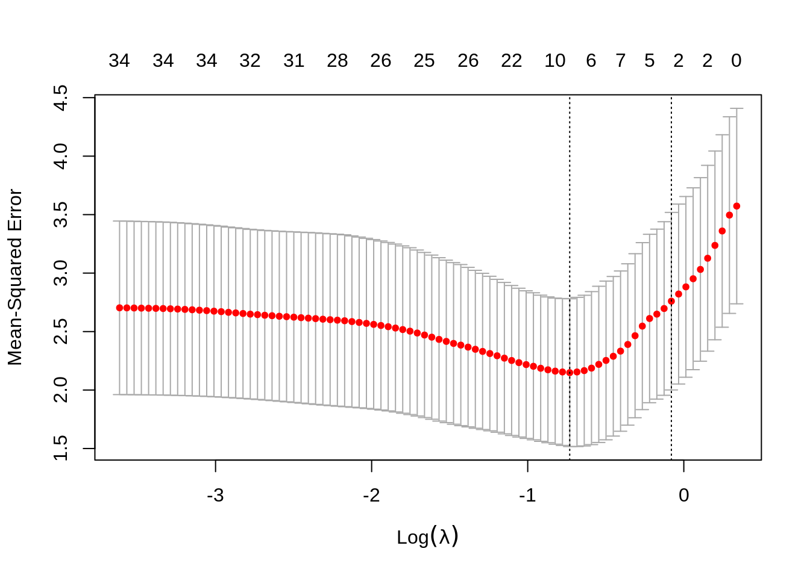
Default CV procedure in is \(k=10\)-fold CV.
The Graphs shows
- 10-fold CV estimates of the extra-sample error as a function of the lasso penalty parameter \(\lambda\).
- estimate plus and minus once the estimated standard error of the CV estimate (grey bars)
- On top the number of non-zero regression parameter estimates are shown.
Two vertical reference lines are added to the graph. They correspond to
- the \(\log(\lambda)\) that gives the smallest CV estimate of the extra-sample error, and
- the largest \(\log(\lambda)\) that gives a CV estimate of the extra-sample error that is within one standard error from the smallest error estimate.
- The latter choice of \(\lambda\) has no firm theoretical basis, except that it somehow accounts for the imprecision of the error estimate. One could loosely say that this \(\gamma\) corresponds to the smallest model (i.e. least number of predictors) that gives an error that is within margin of error of the error of the best model.
mLassoOpt <- glmnet(
x = toxData[,-1] %>%
as.matrix,
y = toxData %>%
pull(BA),
alpha = 1,
lambda = mCvLasso$lambda.min)
summary(coef(mLassoOpt))With the optimal \(\lambda\) (smallest error estimate) the output shows the 9 non-zero estimated regression coefficients (sparse solution).
mLasso1se <- glmnet(
x = toxData[,-1] %>%
as.matrix,
y= toxData %>%
pull(BA),
alpha = 1,
lambda = mCvLasso$lambda.1se)
mLasso1se %>%
coef %>%
summaryThis shows the solution for the largest \(\lambda\) within one standard error of the optimal model. Now only 3 non-zero estimates result.
7.5.4.2 Ridge
mCvRidge <- cv.glmnet(
x = toxData[,-1] %>%
as.matrix,
y = toxData %>%
pull(BA),
alpha = 0) # ridge alpha=0
plot(mCvRidge)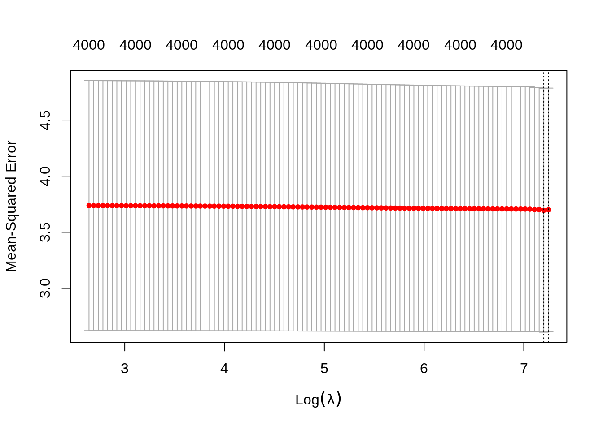
- Ridge does not seem to have optimal solution.
- 10-fold CV is also larger than for lasso.
7.5.4.3 PCA regression
## Loading required package: latticetox <- data.frame(
Y = toxData %>%
pull(BA),
PC = Zk)
PC.seq <- 1:25
Err <- numeric(25)
mCvPca <- cv.lm(
Y~PC.1,
data = tox,
m = 5,
printit = FALSE)
Err[1]<-attr(mCvPca,"ms")
for(i in 2:25) {
mCvPca <- cv.lm(
as.formula(
paste("Y ~ PC.1 + ",
paste("PC.", 2:i, collapse = "+", sep=""),
sep=""
)
),
data = tox,
m = 5,
printit = FALSE)
Err[i]<-attr(mCvPca,"ms")
}Here we illustrate principal component regression.
The most important PCs are selected in a forward model selection procedure.
Within the model selection procedure the models are evaluated with 5-fold CV estimates of the outsample error.
It is important to realise that a forward model selection procedure will not necessarily result in the best prediction model, particularly because the order of the PCs is generally not related to the importance of the PCs for predicting the outcome.
A supervised PC would be better.
pPCreg <- data.frame(PC.seq, Err) %>%
ggplot(aes(x = PC.seq, y = Err)) +
geom_line() +
geom_point() +
geom_hline(
yintercept = c(
mCvLasso$cvm[mCvLasso$lambda==mCvLasso$lambda.min],
mCvLasso$cvm[mCvLasso$lambda==mCvLasso$lambda.1se]),
col = "red") +
xlim(1,26)
grid.arrange(
pPCreg,
pPCreg + ylim(0,5),
ncol=2)## Warning: Removed 6 row(s) containing missing values (geom_path).## Warning: Removed 6 rows containing missing values (geom_point).The graph shows the CV estimate of the outsample error as a function of the number of sparse PCs included in the model.
A very small error is obtained with the model with only the first PC. The best model with 3 PCs.
The two vertical reference lines correspond to the error estimates obtained with lasso (optimal \(\lambda\) and largest \(\lambda\) within one standard error).
Thus although there was a priori no guarantee that the first PCs are the most predictive, it seems to be the case here (we were lucky!).
Moreover, the first PC resulted in a small outsample error.
Note that the graph does not indicate the variability of the error estimates (no error bars).
Also note that the graph clearly illustrates the effect of overfitting: including too many PCs causes a large outsample error.
7.5.5 Lidar Example: splines
- We use the mgcv package to fit the spline model to the lidar data.
- A better basis is used than the truncated spline basis
- Thin plate splines are also linear smoothers, i.e. \(\hat{Y} = \hat{m}(\mathbf{X}) = \mathbf{SY}\)
- So their variance can be easily calculated.
- The ridge/smoothness penalty is chosen by generalized cross validation.
## Loading required package: nlme##
## Attaching package: 'nlme'## The following object is masked from 'package:dplyr':
##
## collapse## This is mgcv 1.8-37. For overview type 'help("mgcv-package")'.## s(range)
## 0.006114634## Warning: Use of `lidar$range` is discouraged. Use `range` instead.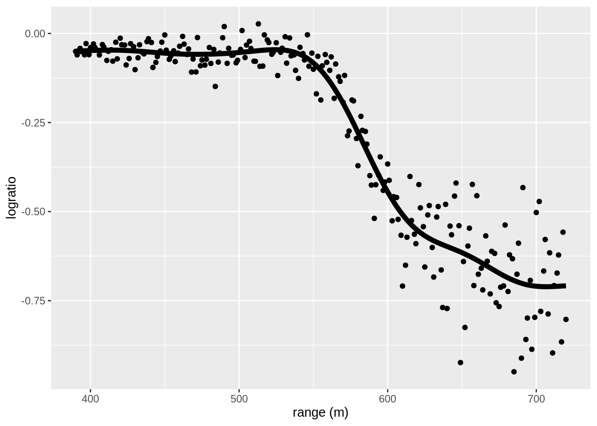
7.6 More general error definitions
So far we only looked at continuous outcomes \(Y\) and errors defined in terms of the squared loss \((\hat{m}(\mathbf{x})-Y^*)^2\).
More generally, a loss function measures an discrepancy between the prediction \(\hat{m}(\mathbf{x})\) and an independent outcome \(Y^*\) that corresponds to \(\mathbf{x}\).
Some examples for continuous \(Y\): \[\begin{eqnarray*} L(Y^*,\hat{m}(\mathbf{x})) &=& (\hat{m}(\mathbf{x})-Y^*)^2 \;\;\text{(squared error)} \\ L(Y^*,\hat{m}(\mathbf{x})) &=& \vert\hat{m}(\mathbf{x})-Y^*\vert \;\;\text{(absolute error)} \\ L(Y^*,\hat{m}(\mathbf{x})) &=& 2 \int_{\cal{Y}} f_y(y) \log\frac{f_y(y)}{f_{\hat{m}}(y)} dy \;\;\text{(deviance)}. \end{eqnarray*}\]
In the expression of the deviance
- \(f_y\) denotes the density function of a distribution with mean set to \(y\) (cfr. perfect fit), and
- \(f_{\hat{m}}\) is the density function of the same distribution but with mean set to the predicted outcome \(\hat{m}(\mathbf{x})\).
With a given loss function, the errors are defined as follows: - Test or generalisation or outsample error \[ \text{Err}_{\cal{T}} = \text{E}_{Y^*,X^*}\left[L(Y^*,\hat{m}(\mathbf{X}^*))\right] \]
Training error \[ \overline{\text{err}} = \frac{1}{n}\sum_{i=1}^n L(Y_i,\hat{m}(\mathbf{x}_i)) \]
\(\ldots\)
When an exponential family distribution is assumed for the outcome distribution, and when the deviance loss is used, the insample error can be estimated by means of the AIC and BIC.
7.6.1 Akaike’s Information Criterion (AIC)
The AIC for a model \(m\) is given by \[ \text{AIC} = -2 \ln \hat{L}(m) +2p \] where \(\hat{L}(m)\) is the maximised likelihood for model \(m\).
When assuming normally distributed error terms and homoscedasticity, the AIC becomes \[ \text{AIC} = n\ln \text{SSE}(m) +2p = n\ln(n\overline{\text{err}}(m)) + 2p \] with \(\text{SSE}(m)\) the residual sum of squares of model \(m\).
In linear models with normal error terms, Mallow’s \(C_p\) criterion (statistic) is a linearised version of AIC and it is an unbiased estimator of the in-sample error.
7.6.2 Bayesian Information Criterion (BIC)}
The BIC for a model \(m\) is given by \[ \text{BIC} = -2 \ln \hat{L}(m) +p\ln(n) \] where \(\hat{L}(m)\) is the maximised likelihood for model \(m\).
When assuming normally distributed error terms and homoscedasticity, the BIC becomes \[ \text{BIC} = n\ln \text{SSE}(m) +p\ln(n) = n\ln(n\overline{\text{err}}(m)) + p\ln(n) \] with \(\text{SSE}(m)\) the residual sum of squares of model \(m\).
When large datasets are used, the BIC will favour smaller models than the AIC.
7.7 Training and test sets
Sometimes, when a large (training) dataset is available, one may decide the split the dataset randomly in a
training dataset: data are used for model fitting and for model building or feature selection (this may require e.g. cross validation)
test dataset: this data are used to evaluate the final model (result of model building). An unbiased estimate of the outsample error (i.e. test or generalisation error) based on this test data is \[ \frac{1}{m} \sum_{i=1}^m \left(\hat{m}(\mathbf{x}_i)-Y_i\right)^2, \] where
\((Y_1,\mathbf{x}_1), \ldots, (Y_m,\mathbf{x}_m)\) denote the \(m\) observations in the test dataset
\(\hat{m}\) is estimated from using the training data (this may also be the result from model building, using only the training data).
Note that the training dataset is used for model building or feature selection. This also requires the evaluation of models. For these evaluations the methods from the previous slides can be used (e.g. cross validation, \(k\)-fold CV, Mallow’s \(C_p\)). The test dataset is only used for the evaluation of the final model (estimated and build from using only the training data). The estimate of the outsample error based on the test dataset is the best possible estimate in the sense that it is unbiased. The observations used for this estimation are independent of the observations in the training data. However, if the number of data points in the test dataset (\(m\)) is small, the estimate of the outsample error may show large variance and hence is not reliable.
8 Logistic Regression Analysis for High Dimensional Data
8.1 Breast Cancer Example
Schmidt et al., 2008, Cancer Research, 68, 5405-5413
Gene expression patterns in \(n=200\) breast tumors were investigated (\(p=22283\) genes)
After surgery the tumors were graded by a pathologist (stage 1,2,3)
Here the objective is to predict stage 3 from the gene expression data (prediction of binary outcome)
If the prediction model works well, it can be used to predict the stage from a biopsy sample.
8.2 Data
#BiocManager::install("genefu")
#BiocManager::install("breastCancerMAINZ")
library(genefu)
library(breastCancerMAINZ)
data(mainz)
X <- t(exprs(mainz)) # gene expressions
n <- nrow(X)
H <- diag(n)-1/n*matrix(1,ncol=n,nrow=n)
X <- H%*%X
Y <- ifelse(pData(mainz)$grade==3,1,0)
table(Y)## Y
## 0 1
## 165 35svdX <- svd(X)
k <- 2
Zk <- svdX$u[,1:k] %*% diag(svdX$d[1:k])
colnames(Zk) <- paste0("Z",1:k)
Zk %>%
as.data.frame %>%
mutate(grade = Y %>% as.factor) %>%
ggplot(aes(x= Z1, y = Z2, color = grade)) +
geom_point(size = 3)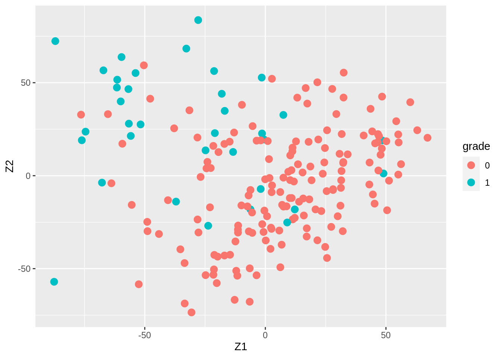
8.3 Logistic regression models
Binary outcomes are often analysed with logistic regression models.
Let \(Y\) denote the binary (1/0, case/control, positive/negative) outcome, and \(\mathbf{x}\) the \(p\)-dimensional predictor.
Logistic regression assumes \[ Y \mid \mathbf{x} \sim \text{Bernoulli}(\pi(\mathbf{x})) \] with \(\pi(\mathbf{x}) = \text{P}\left[Y=1\mid \mathbf{x}\right]\) and \[ \ln \frac{\pi(\mathbf{x})}{1-\pi(\mathbf{x})}=\beta_0 + \boldsymbol{\beta}^T\mathbf{x}. \]
The parameters are typically estimated by maximising the log-likelihood, which is denoted by \(l(\mathbf{ \beta})\), i.e. \[ \hat{\boldsymbol{\beta}} = \text{ArgMax}_\beta l(\boldsymbol{\beta}). \]
Maximum likelihood is only applicable when \(n>p\).
When \(p>n\) penalised maximum likelihood methods are applicable.
8.4 Penalized maximum likelihood
Penalised estimation methods (e.g. lasso and ridge) can als be applied to maximum likelihood, resulting in the penalised maximum likelihood estimate.
Lasso: \[ \hat{\boldsymbol{\beta}} = \text{ArgMax}_\beta l(\boldsymbol{\beta}) -\lambda \Vert \boldsymbol{\beta}\Vert_1. \]
Ridge: \[ \hat{\boldsymbol{\beta}} = \text{ArgMax}_\beta l(\boldsymbol{\beta}) -\lambda \Vert \boldsymbol{\beta}\Vert_2^2. \]
Once the parameters are estimated, the model may be used to compute \[ \hat{\pi}(\mathbf{x}) = \hat{\text{P}}\left[Y=1\mid \mathbf{x}\right]. \] With these estimated probabilities the prediction rule becomes \[\begin{eqnarray*} \hat{\pi}(\mathbf{x}) &\leq c& \text{predict } Y=0 \\ \hat{\pi}(\mathbf{x}) &>c & \text{predict } Y=1 \end{eqnarray*}\] with \(0<c<1\) a threshold that either is fixed (e.g. \(c=1/2\)), depends on prior probabilities, or is empirically determined by optimising e.g. the Area Under the ROC Curve (AUC) or by finding a good compromise between sensitivity and specificity.
Note that logistic regression directly models the Posterior probability that an observation belongs to class \(Y=1\), given the predictor \(\mathbf{x}\).
8.5 Model evaluation
Common model evaluation criteria for binary prediction models are:
sensitivity = true positive rate (TPR)
specificity = true negative rate (TNR)
misclassification error
area under the ROC curve (AUC)
These criteria can again be estimated via cross validation or via splitting of the data into training and test/validation data.
8.5.1 Sensitivity of a model \(\pi\) with threshold \(c\)
Sensitivity is the probability to correctly predict a positive outcome: \[ \text{sens}(\pi,c)=\text{P}_{X^*}\left[\hat\pi(\mathbf{X}^*)>c \mid Y^*=1 \mid {\cal{T}}\right]. \]
It is also known as the true positive rate (TPR).
8.5.2 Specificity of a model \(\pi\) with threshold \(c\)
Specificity is the probability to correctly predict a negative outcome: \[ \text{spec}(\pi,c)=\text{P}_{X^*}\left[\hat\pi(\mathbf{X}^*)\leq c \mid Y^*=0 \mid {\cal{T}}\right]. \]
It is also known as the true negative rate (TNR).
8.5.3 Misclassification error of a model \(\pi\) with threshold \(c\)
The misclassification error is the probability to incorrectly predict an outcome: \[\begin{eqnarray*} \text{mce}(\pi,c) &=&\text{P}_{X^*,Y^*}\left[\hat\pi(\mathbf{X})\leq c \text{ and } Y^*=1 \mid {\cal{T}}\right] \\ & & + \text{P}_{X^*,Y^*}\left[\hat\pi(\mathbf{X})> c \text{ and } Y^*=0 \mid {\cal{T}}\right]. \end{eqnarray*}\]
Note that in the definitions of sensitivity, specificity and the misclassification error, the probabilities refer to the distribution of the \((\mathbf{X}^*,Y^*)\), which is independent of the training data, conditional on the training data. This is in line with the test or generalisation error. The misclassification error is actually the test error when a 0/1 loss function is used. Just as before, the sensitivity, specificity and the misclassification error can also be averaged over the distribution of the training data set, which is in line with the expected test error which has been discussed earlier.
8.5.4 ROC curve of a model \(\pi\)
The Receiver Operating Characteristic (ROC) curve for model \(\pi\) is given by the function
\[ \text{ROC}: [0,1] \rightarrow [0,1]\times [0,1]: c \mapsto (1-\text{spec}(\pi,c), \text{sens}(\pi,c)). \]
For when \(c\) moves from 1 to 0, the ROC function defines a curve in the plane \([0,1]\times [0,1]\), moving from \((0,0)\) for \(c=1\) to \((1,1)\) for \(c=0\).
The horizontal axis of the ROC curve shows 1-specificity. This is also known as the False Positive Rate (FPR).
8.5.5 Area under the curve (AUC) of a model \(\pi\)
The area under the curve (AUC) for model \(\pi\) is area under the ROC curve and is given by \[ \int_0^1 \text{ROC}(c) dc. \]
Some notes about the AUC:
AUC=0.5 results when the ROC curve is the diagonal. This corresponds to flipping a coin, i.e. a complete random prediction.
AUC=1 results from the perfect ROC curve, which is the ROC curve through the points \((0,0)\), \((0,1)\) and \((1,1)\). This ROC curve includes a threshold \(c\) such that sensitivity and specificity are equal to one.
8.6 Breast cancer example
8.6.1 Data
library(glmnet)
#BiocManager::install("genefu")
#BiocManager::install("breastCancerMAINZ")
library(genefu)
library(breastCancerMAINZ)
data(mainz)
X <- t(exprs(mainz)) # gene expressions
n <- nrow(X)
H <- diag(n)-1/n*matrix(1,ncol=n,nrow=n)
X <- H%*%X
Y <- ifelse(pData(mainz)$grade==3,1,0)
table(Y)## Y
## 0 1
## 165 35From the table of the outcomes in Y we read that
- 35 tumors were graded as stage 3 and
- 165 tumors were graded as stage 1 or 2.
In this the stage 3 tumors are referred to as cases or postives and the stage 1 and 2 tumors as controls or negatives.
8.6.2 Training and test dataset
The use of the lasso logistic regression for the prediction of stage 3 breast cancer is illustrated here by
randomly splitting the dataset into a training dataset (\(80\%\) of data = 160 tumors) and a test dataset (40 tumors)
using the training data to select a good \(\lambda\) value in the lasso logistic regression model (through 10-fold CV)
evaluating the final model by means of the test dataset (ROC Curve, AUC).
## Warning in RNGkind(sample.kind = "Rounding"): non-uniform 'Rounding' sampler
## used## [1] 160indTrain <- sample(1:n,nTrain)
XTrain <- X[indTrain,]
YTrain <- Y[indTrain]
XTest <- X[-indTrain,]
YTest <- Y[-indTrain]
table(YTest)## YTest
## 0 1
## 32 8Note that the randomly selected test data has 20% cases of stage 3 tumors. This is a bit higher than the 17.5% in the complete data.
One could also perform the random splitting among the positives and the negatives separately (stratified splitting).
8.6.3 Model fitting based on training data
mLasso <- glmnet(
x = XTrain,
y = YTrain,
alpha = 1,
family="binomial") # lasso: alpha = 1
plot(mLasso, xvar = "lambda", xlim = c(-6,-1.5))mCvLasso <- cv.glmnet(
x = XTrain,
y = YTrain,
alpha = 1,
type.measure = "class",
family = "binomial") # lasso alpha = 1
plot(mCvLasso)##
## Call: cv.glmnet(x = XTrain, y = YTrain, type.measure = "class", alpha = 1, family = "binomial")
##
## Measure: Misclassification Error
##
## Lambda Index Measure SE Nonzero
## min 0.1044 14 0.1437 0.03366 18
## 1se 0.1911 1 0.1688 0.03492 0The total misclassification error is used here to select a good value for \(\lambda\).
# BiocManager::install("plotROC")
library(plotROC)
dfLassoOpt <- data.frame(
pi = predict(mCvLasso,
newx = XTest,
s = mCvLasso$lambda.min,
type = "response") %>% c(.),
known.truth = YTest)
roc <-
dfLassoOpt %>%
ggplot(aes(d = known.truth, m = pi)) +
geom_roc(n.cuts = 0) +
xlab("1-specificity (FPR)") +
ylab("sensitivity (TPR)")
roc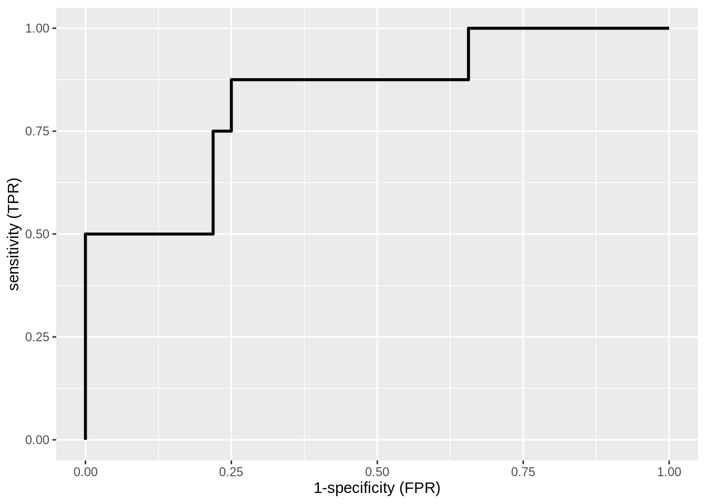
The ROC curve is shown for the model based on \(\lambda\) with the smallest misclassification error. The model has an AUC of 0.83.
Based on this ROC curve an appropriate threshold \(c\) can be chosen. For example, from the ROC curve we see that it is possible to attain a specificity and a sensitivity of 75%.
The sensitivities and specificities in the ROC curve are unbiased (independent test dataset) for the prediction model build from the training data. The estimates of sensitivity and specificity, however, are based on only 40 observations.
mLambdaOpt <- glmnet(x = XTrain,
y = YTrain,
alpha = 1,
lambda = mCvLasso$lambda.min,
family="binomial")
qplot(
summary(coef(mLambdaOpt))[-1,1],
summary(coef(mLambdaOpt))[-1,3]) +
xlab("gene ID") +
ylab("beta-hat") +
geom_hline(yintercept = 0, color = "red")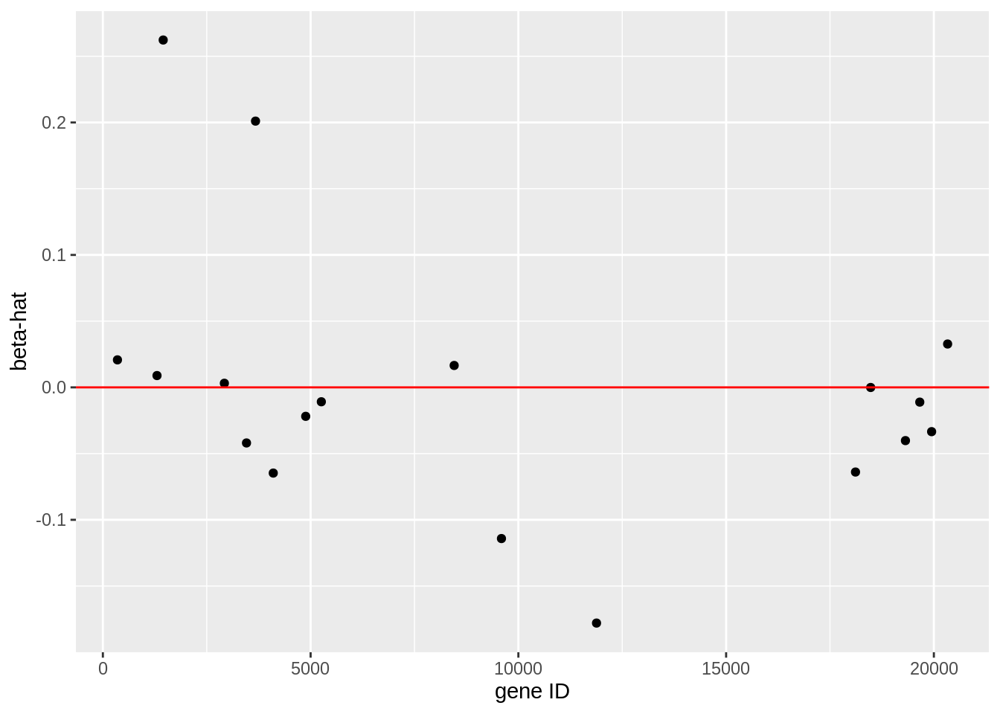
- The model with the optimal \(\lambda\) has only 19 non-zero parameter estimates.
- Thus only 19 genes are involved in the prediction model.
- These 19 parameter estimates are plotting in the graph. A listing of the model output would show the names of the genes.
dfLasso1se <- data.frame(
pi = predict(mCvLasso,
newx = XTest,
s = mCvLasso$lambda.1se,
type = "response") %>% c(.),
known.truth = YTest)
roc <-
rbind(
dfLassoOpt %>%
mutate(method = "min"),
dfLasso1se %>%
mutate(method = "1se")
) %>%
ggplot(aes(d = known.truth, m = pi, color = method)) +
geom_roc(n.cuts = 0) +
xlab("1-specificity (FPR)") +
ylab("sensitivity (TPR)")
roc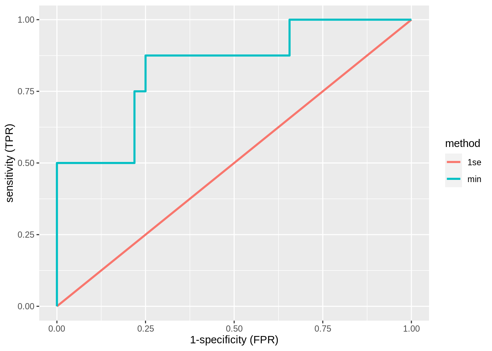
When using the \(\lambda\) of the optimal model up to 1 standard deviation, a diagonal ROC curve is obtained and hence AUC is \(0.5\).
This prediction model is thus equivalent to flipping a coin for making the prediction.
The reason is that with this choice of \(\lambda\) (strong penalisation) almost all predictors are removed from the model.
Therefore, do never blindly choose for the ``optimal’’ \(\lambda\) as defined here, but assess the performance of the model first.
mLambda1se <- glmnet(x = XTrain,
y = YTrain,
alpha = 1,
lambda = mCvLasso$lambda.1se,
family="binomial")
mLambda1se %>%
coef %>%
summary8.7 The Elastic Net
The lasso and ridge regression have positive and negative properties.
Lasso
positive: sparse solution
negative: at most \(\min(n,p)\) predictors can be selected
negative: tend to select one predictor among a group of highly correlated predictors
Ridge
- negative: no sparse solution
- positive: more than \(\min(n,p)\) predictors can be selected
A compromise between lasso and ridge: the elastic net: \[ \hat{\boldsymbol{\beta}} = \text{ArgMax}_\beta l(\boldsymbol{\beta}) -\gamma_1 \Vert \boldsymbol\beta\Vert_1 -\gamma_2 \Vert \boldsymbol\beta\Vert_2^2. \]
The elastic gives a sparse solution with potentially more than \(\min(n,p)\) predictors.
The glmnet R function uses the following parameterisation, \[
\hat{\boldsymbol{\beta}} = \text{ArgMax}_\beta l(\boldsymbol{\beta}) -\lambda\alpha \Vert \boldsymbol\beta\Vert_1 -\lambda(1-\alpha) \Vert \boldsymbol\beta\Vert_2^2.
\]
\(\alpha\) parameter gives weight to \(L_1\) penalty term (hence \(\alpha=1\) gives the lasso, and \(\alpha=0\) gives ridge).
a \(\lambda\) parameter to give weight to the penalisation
Note that the combination of \(\lambda\) and \(\alpha\) gives the same flexibility as the combination of the parameters \(\lambda_1\) and \(\lambda_2\).
8.7.1 Breast cancer example
mElastic <- glmnet(
x = XTrain,
y = YTrain,
alpha = 0.5,
family="binomial") # elastic net
plot(mElastic, xvar = "lambda",xlim=c(-5.5,-1))mCvElastic <- cv.glmnet(x = XTrain,
y = YTrain,
alpha = 0.5,
family = "binomial",
type.measure = "class") # elastic net
plot(mCvElastic)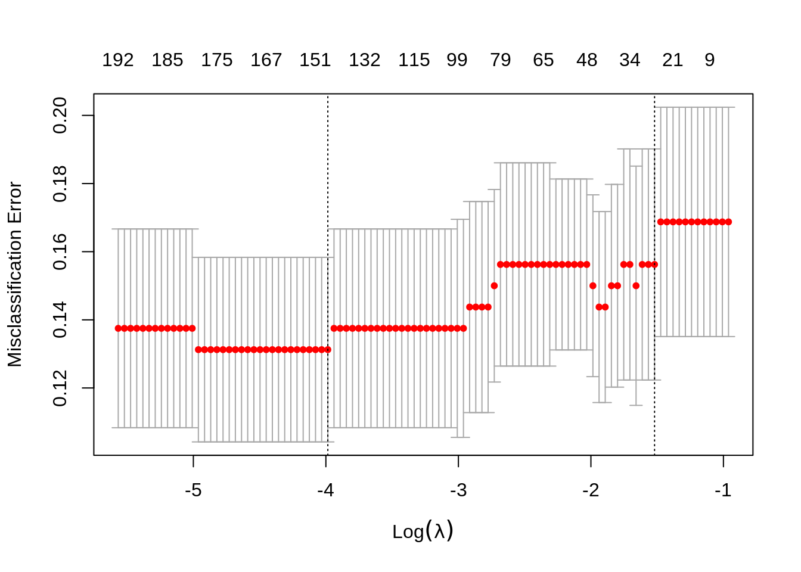
##
## Call: cv.glmnet(x = XTrain, y = YTrain, type.measure = "class", alpha = 0.5, family = "binomial")
##
## Measure: Misclassification Error
##
## Lambda Index Measure SE Nonzero
## min 0.01859 66 0.1313 0.02708 148
## 1se 0.21876 13 0.1562 0.03391 26dfElast <- data.frame(
pi = predict(mElastic,
newx = XTest,
s = mCvElastic$lambda.min,
type = "response") %>% c(.),
known.truth = YTest)
roc <- rbind(
dfLassoOpt %>% mutate(method = "lasso"),
dfElast %>% mutate(method = "elast. net")) %>%
ggplot(aes(d = known.truth, m = pi, color = method)) +
geom_roc(n.cuts = 0) +
xlab("1-specificity (FPR)") +
ylab("sensitivity (TPR)")
roc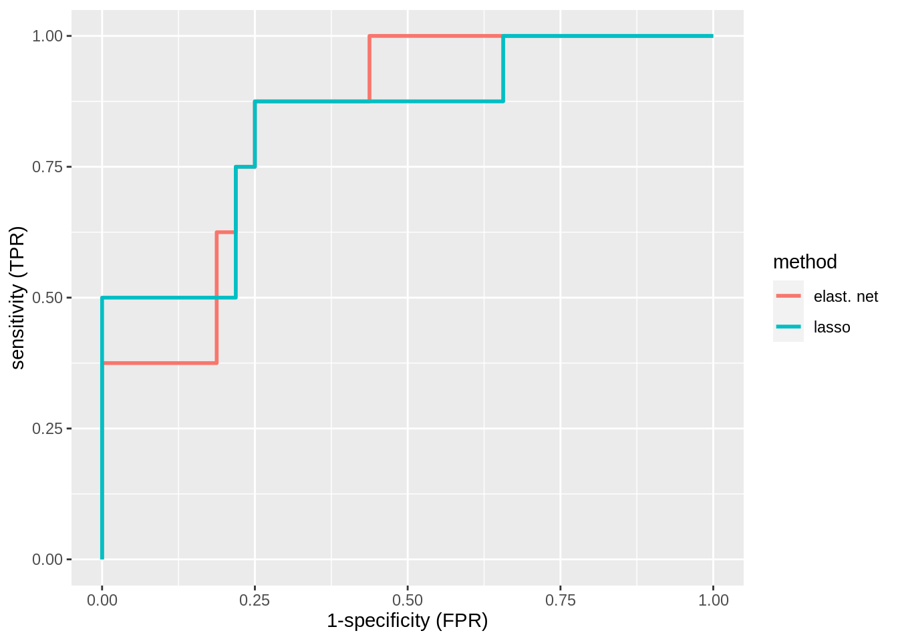
- More parameters are used than for the lasso, but the performance does not improve.
mElasticOpt <- glmnet(x = XTrain,
y = YTrain,
alpha = 0.5,
lambda = mCvElastic$lambda.min,
family="binomial")
qplot(
summary(coef(mElasticOpt))[-1,1],
summary(coef(mElasticOpt))[-1,3]) +
xlab("gene ID") +
ylab("beta-hat") +
geom_hline(yintercept = 0, color = "red")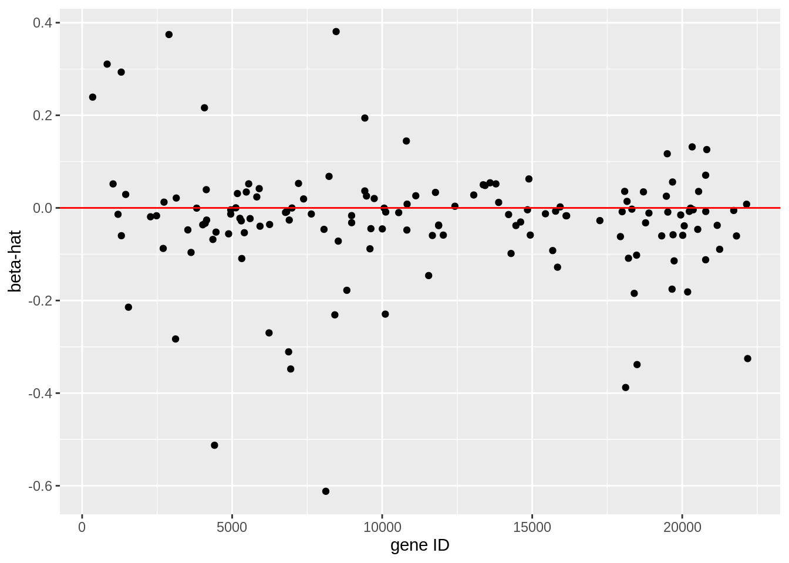
Acknowledgement
- Olivier Thas for sharing his materials of Analysis of High Dimensional Data 2019-2020, which I used as the starting point for this chapter.
Session info
Session info
## [1] "2021-11-17 15:19:59 UTC"## ─ Session info 🚻 🥌 💂🏽 ─────────────────────────────────────────────────
## hash: restroom, curling stone, guard: medium skin tone
##
## setting value
## version R version 4.1.2 (2021-11-01)
## os macOS Catalina 10.15.7
## system x86_64, darwin17.0
## ui X11
## language (EN)
## collate en_US.UTF-8
## ctype en_US.UTF-8
## tz UTC
## date 2021-11-17
## pandoc 2.7.3 @ /usr/local/bin/ (via rmarkdown)
##
## ─ Packages ───────────────────────────────────────────────────────────────────
## ! package * version date (UTC) lib source
## P AIMS * 1.24.0 2021-05-19 [?] Bioconductor
## P AnnotationDbi 1.54.1 2021-06-08 [?] Bioconductor
## P assertthat 0.2.1 2019-03-21 [?] CRAN (R 4.1.0)
## P backports 1.2.1 2020-12-09 [?] CRAN (R 4.1.0)
## P Biobase * 2.52.0 2021-05-19 [?] Bioconductor
## P BiocFileCache 2.0.0 2021-05-19 [?] Bioconductor
## P BiocGenerics * 0.38.0 2021-05-19 [?] Bioconductor
## P biomaRt * 2.48.3 2021-08-15 [?] Bioconductor
## P Biostrings 2.60.2 2021-08-05 [?] Bioconductor
## P bit 4.0.4 2020-08-04 [?] CRAN (R 4.1.0)
## P bit64 4.0.5 2020-08-30 [?] CRAN (R 4.1.0)
## P bitops 1.0-7 2021-04-24 [?] CRAN (R 4.1.0)
## P blob 1.2.2 2021-07-23 [?] CRAN (R 4.1.0)
## P bootstrap 2019.6 2019-06-17 [?] CRAN (R 4.1.0)
## P breastCancerMAINZ * 1.30.0 2021-05-20 [?] Bioconductor
## P broom 0.7.9 2021-07-27 [?] CRAN (R 4.1.2)
## P bslib 0.3.0 2021-09-02 [?] CRAN (R 4.1.2)
## P cachem 1.0.6 2021-08-19 [?] CRAN (R 4.1.0)
## P cellranger 1.1.0 2016-07-27 [?] CRAN (R 4.1.0)
## P class 7.3-19 2021-05-03 [?] CRAN (R 4.1.2)
## P cli 3.1.0 2021-10-27 [?] CRAN (R 4.1.0)
## P cluster * 2.1.2 2021-04-17 [?] CRAN (R 4.1.2)
## P codetools 0.2-18 2020-11-04 [?] CRAN (R 4.1.2)
## P colorspace 2.0-2 2021-06-24 [?] CRAN (R 4.1.0)
## P crayon 1.4.1 2021-02-08 [?] CRAN (R 4.1.0)
## P curl 4.3.2 2021-06-23 [?] CRAN (R 4.1.0)
## P DAAG * 1.24 2020-03-10 [?] CRAN (R 4.1.0)
## P DBI 1.1.1 2021-01-15 [?] CRAN (R 4.1.0)
## P dbplyr 2.1.1 2021-04-06 [?] CRAN (R 4.1.0)
## P digest 0.6.28 2021-09-23 [?] CRAN (R 4.1.0)
## P dplyr * 1.0.7 2021-06-18 [?] CRAN (R 4.1.0)
## P e1071 * 1.7-9 2021-09-16 [?] CRAN (R 4.1.0)
## P ellipsis 0.3.2 2021-04-29 [?] CRAN (R 4.1.0)
## P evaluate 0.14 2019-05-28 [?] CRAN (R 4.1.0)
## P fansi 0.5.0 2021-05-25 [?] CRAN (R 4.1.0)
## P farver 2.1.0 2021-02-28 [?] CRAN (R 4.1.0)
## P fastmap 1.1.0 2021-01-25 [?] CRAN (R 4.1.0)
## P filelock 1.0.2 2018-10-05 [?] CRAN (R 4.1.0)
## P forcats * 0.5.1 2021-01-27 [?] CRAN (R 4.1.0)
## P foreach 1.5.1 2020-10-15 [?] CRAN (R 4.1.0)
## P fs 1.5.0 2020-07-31 [?] CRAN (R 4.1.0)
## P future 1.22.1 2021-08-25 [?] CRAN (R 4.1.2)
## P future.apply 1.8.1 2021-08-10 [?] CRAN (R 4.1.0)
## P genefu * 2.24.2 2021-05-23 [?] Bioconductor
## P generics 0.1.0 2020-10-31 [?] CRAN (R 4.1.0)
## P GenomeInfoDb 1.28.4 2021-09-09 [?] Bioconductor
## P GenomeInfoDbData 1.2.6 2021-11-12 [?] Bioconductor
## P ggforce * 0.3.3 2021-03-05 [?] CRAN (R 4.1.0)
## P ggplot2 * 3.3.5 2021-06-25 [?] CRAN (R 4.1.0)
## P glmnet * 4.1-2 2021-06-24 [?] CRAN (R 4.1.0)
## P globals 0.14.0 2020-11-22 [?] CRAN (R 4.1.0)
## P glue 1.4.2 2020-08-27 [?] CRAN (R 4.1.0)
## P gridExtra * 2.3 2017-09-09 [?] CRAN (R 4.1.0)
## P gtable 0.3.0 2019-03-25 [?] CRAN (R 4.1.0)
## P haven 2.4.3 2021-08-04 [?] CRAN (R 4.1.0)
## P highr 0.9 2021-04-16 [?] CRAN (R 4.1.0)
## P hms 1.1.1 2021-09-26 [?] CRAN (R 4.1.0)
## P htmltools 0.5.2 2021-08-25 [?] CRAN (R 4.1.0)
## P httr 1.4.2 2020-07-20 [?] CRAN (R 4.1.0)
## P iC10 * 1.5 2019-02-08 [?] CRAN (R 4.1.0)
## P iC10TrainingData * 1.3.1 2018-08-24 [?] CRAN (R 4.1.0)
## P impute * 1.66.0 2021-05-19 [?] Bioconductor
## P IRanges 2.26.0 2021-05-19 [?] Bioconductor
## P iterators 1.0.13 2020-10-15 [?] CRAN (R 4.1.0)
## P jpeg 0.1-9 2021-07-24 [?] CRAN (R 4.1.0)
## P jquerylib 0.1.4 2021-04-26 [?] CRAN (R 4.1.0)
## P jsonlite 1.7.2 2020-12-09 [?] CRAN (R 4.1.0)
## P KEGGREST 1.32.0 2021-05-19 [?] Bioconductor
## P KernSmooth 2.23-20 2021-05-03 [?] CRAN (R 4.1.2)
## P knitr 1.33 2021-04-24 [?] CRAN (R 4.1.0)
## P labeling 0.4.2 2020-10-20 [?] CRAN (R 4.1.0)
## P latex2exp * 0.5.0 2021-03-18 [?] CRAN (R 4.1.0)
## P lattice * 0.20-45 2021-09-22 [?] CRAN (R 4.1.2)
## P latticeExtra 0.6-29 2019-12-19 [?] CRAN (R 4.1.0)
## P lava 1.6.10 2021-09-02 [?] CRAN (R 4.1.0)
## P lifecycle 1.0.1 2021-09-24 [?] CRAN (R 4.1.0)
## P limma 3.48.3 2021-08-10 [?] Bioconductor
## P listenv 0.8.0 2019-12-05 [?] CRAN (R 4.1.0)
## P lubridate 1.7.10 2021-02-26 [?] CRAN (R 4.1.0)
## P magrittr 2.0.1 2020-11-17 [?] CRAN (R 4.1.0)
## P MASS 7.3-54 2021-05-03 [?] CRAN (R 4.1.2)
## P Matrix * 1.3-4 2021-06-01 [?] CRAN (R 4.1.2)
## P mclust 5.4.7 2020-11-20 [?] CRAN (R 4.1.0)
## P memoise 2.0.0 2021-01-26 [?] CRAN (R 4.1.0)
## P mgcv * 1.8-37 2021-09-23 [?] CRAN (R 4.1.2)
## P modelr 0.1.8 2020-05-19 [?] CRAN (R 4.1.0)
## P munsell 0.5.0 2018-06-12 [?] CRAN (R 4.1.0)
## P nlme * 3.1-153 2021-09-07 [?] CRAN (R 4.1.2)
## P pamr * 1.56.1 2019-04-22 [?] CRAN (R 4.1.0)
## P parallelly 1.28.1 2021-09-09 [?] CRAN (R 4.1.0)
## P pillar 1.6.3 2021-09-26 [?] CRAN (R 4.1.2)
## P pkgconfig 2.0.3 2021-11-12 [?] Github (r-lib/pkgconfig@b81ae03)
## P plotROC * 2.2.1 2018-06-23 [?] CRAN (R 4.1.0)
## P plyr 1.8.6 2020-03-03 [?] CRAN (R 4.1.0)
## P png 0.1-7 2013-12-03 [?] CRAN (R 4.1.0)
## P polyclip 1.10-0 2019-03-14 [?] CRAN (R 4.1.0)
## P prettyunits 1.1.1 2020-01-24 [?] CRAN (R 4.1.0)
## P prodlim * 2019.11.13 2019-11-17 [?] CRAN (R 4.1.0)
## P progress 1.2.2 2019-05-16 [?] CRAN (R 4.1.0)
## P proxy 0.4-26 2021-06-07 [?] CRAN (R 4.1.0)
## P purrr * 0.3.4 2020-04-17 [?] CRAN (R 4.1.0)
## P R6 2.5.1 2021-08-19 [?] CRAN (R 4.1.0)
## P rappdirs 0.3.3 2021-01-31 [?] CRAN (R 4.1.0)
## P RColorBrewer 1.1-2 2014-12-07 [?] CRAN (R 4.1.0)
## P Rcpp 1.0.7 2021-07-07 [?] CRAN (R 4.1.0)
## P RCurl 1.98-1.4 2021-08-17 [?] CRAN (R 4.1.2)
## P readr * 2.0.1 2021-08-10 [?] CRAN (R 4.1.2)
## P readxl 1.3.1 2019-03-13 [?] CRAN (R 4.1.0)
## P renv 0.14.0 2021-07-21 [?] CRAN (R 4.1.0)
## P reprex 2.0.1 2021-08-05 [?] CRAN (R 4.1.0)
## P rlang 0.4.11 2021-04-30 [?] CRAN (R 4.1.0)
## P rmarkdown 2.10 2021-08-06 [?] CRAN (R 4.1.2)
## P rmeta 3.0 2018-03-20 [?] CRAN (R 4.1.0)
## P RSQLite 2.2.8 2021-08-21 [?] CRAN (R 4.1.0)
## P rstudioapi 0.13 2020-11-12 [?] CRAN (R 4.1.0)
## P rvest 1.0.1 2021-07-26 [?] CRAN (R 4.1.2)
## P S4Vectors 0.30.0 2021-05-19 [?] Bioconductor
## P sass 0.4.0 2021-05-12 [?] CRAN (R 4.1.0)
## P scales 1.1.1 2020-05-11 [?] CRAN (R 4.1.0)
## P SemiPar * 1.0-4.2 2018-04-16 [?] CRAN (R 4.1.0)
## P sessioninfo 1.2.1 2021-11-02 [?] CRAN (R 4.1.0)
## P shape 1.4.6 2021-05-19 [?] CRAN (R 4.1.0)
## P stringi 1.7.4 2021-08-25 [?] CRAN (R 4.1.2)
## P stringr * 1.4.0 2019-02-10 [?] CRAN (R 4.1.0)
## P SuppDists 1.1-9.5 2020-01-18 [?] CRAN (R 4.1.0)
## P survcomp * 1.42.0 2021-05-19 [?] Bioconductor
## P survival * 3.2-13 2021-08-24 [?] CRAN (R 4.1.2)
## P survivalROC 1.0.3 2013-01-13 [?] CRAN (R 4.1.0)
## P tibble * 3.1.5 2021-09-30 [?] CRAN (R 4.1.2)
## P tidyr * 1.1.4 2021-09-27 [?] CRAN (R 4.1.0)
## P tidyselect 1.1.1 2021-04-30 [?] CRAN (R 4.1.0)
## P tidyverse * 1.3.1 2021-04-15 [?] CRAN (R 4.1.0)
## P tweenr 1.0.2 2021-03-23 [?] CRAN (R 4.1.0)
## P tzdb 0.1.2 2021-07-20 [?] CRAN (R 4.1.0)
## P utf8 1.2.2 2021-07-24 [?] CRAN (R 4.1.0)
## P vctrs 0.3.8 2021-04-29 [?] CRAN (R 4.1.0)
## P vroom 1.5.4 2021-08-05 [?] CRAN (R 4.1.2)
## P withr 2.4.2 2021-04-18 [?] CRAN (R 4.1.0)
## P xfun 0.25 2021-08-06 [?] CRAN (R 4.1.2)
## P XML 3.99-0.8 2021-09-17 [?] CRAN (R 4.1.0)
## P xml2 1.3.2 2020-04-23 [?] CRAN (R 4.1.0)
## P XVector 0.32.0 2021-05-19 [?] Bioconductor
## P yaml 2.2.1 2020-02-01 [?] CRAN (R 4.1.0)
## P zlibbioc 1.38.0 2021-05-19 [?] Bioconductor
##
## [1] /Users/runner/work/HDDA21/HDDA21/renv/library/R-4.1/x86_64-apple-darwin17.0
## [2] /private/var/folders/24/8k48jl6d249_n_qfxwsl6xvm0000gn/T/RtmpR3DnLc/renv-system-library
##
## P ── Loaded and on-disk path mismatch.
##
## ──────────────────────────────────────────────────────────────────────────────